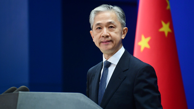

美国对华认知中的谬误和事实真相
# 引 言

近日，美国国务卿布林肯在亚洲协会发表对华政策演讲，通过精心包装的语言渲染中国威胁，干涉中国内政，抹黑中国内外政策，试图发起对华全面遏制打压。
让我们用事实和数据说话，将美国对华政策的欺骗性、虚伪性和危害性昭示于天下。
谬误 1：中国对国际秩序构成最严峻长期挑战，正在破坏国际秩序。美国将捍卫国际法、协议、原则和机构以维护世界和平与安全，保护个人和国家的权利。
** 事实真相：** 美国口口声声讲的国际秩序，实际上是服务美国自身利益、维护美国霸权地位的秩序。美国是世界秩序的最大乱源。
◆中国过去、现在和将来都是国际秩序的维护者。中国是联合国创始会员国，是第一个在联合国宪章上签字的国家。中国始终维护以联合国为核心的国际体系、以国际法为基础的国际秩序、以联合国宪章宗旨和原则为基础的国际关系基本准则。中国、印度、缅甸三国共同倡导的和平共处五项原则获得国际社会广泛认同，成为指导国与国关系的基本准则。
中国坚持真正的多边主义，维护全球战略稳定。中国是安理会常任理事国中派遣维和人员最多的国家和联合国第二大维和摊款国。中国积极参与国际军控、裁军和防扩散进程，已签署或加入包括《不扩散核武器条约》《武器贸易条约》在内 20 多个多边军控、裁军和防扩散条约，反对军备竞赛。
2008 年国际金融危机发生后，中国采取负责任的宏观经济政策，成为世界经济 “稳定器”，为拉动全球复苏作出重要贡献。中国积极为各国提供国际公共产品，已同 149 个国家和 32 个国际组织签署了共建 “一带一路” 协议。
◆近年来，习近平主席提出的构建人类命运共同体理念在国际社会引起热烈反响，多次被写入联合国、上海合作组织等多边机制重要文件。联合国秘书长古特雷斯表示，中国已成为多边主义的重要支柱，而我们践行多边主义的目的，就是要建立人类命运共同体。第七十一届联大主席汤姆森表示，中国所倡导的构建人类命运共同体理念，是 “人类在这个星球上的唯一未来”。
面对各种新的全球性挑战，习近平主席还先后提出全球发展倡议、全球安全倡议，为推动建立更加公正合理的全球治理体系提出了中国方案，得到国际社会积极响应和广泛支持。
◆美国公然违反《联合国宪章》宗旨和原则以及国际关系基本准则，倚靠强大军事实力四处发动战争，制造分裂冲突，给世界带来巨大动荡和灾难。美国在建国以来 240 多年历史中仅有 16 年没有打仗，堪称 “世界历史上最好战的国家”。美国《国家利益》杂志援引美国传统基金会防务项目高级研究员达科塔・伍德的话说，美国平均每 15 年就卷入一场战争。
二战结束以来，美国在海外发动或参与了朝鲜战争、越南战争、阿富汗战争、伊拉克战争等多场战争，造成极为严重的平民伤亡和财产损失，导致巨大的人道主义灾难。自 2001 年以来，美国以反恐之名发动的战争和军事行动已造成超过 90 万人死亡，其中约有 33.5 万是平民，数百万人受伤，数千万人流离失所。
◆美国一贯将国内法凌驾于国际法之上，对国际规则采取合则用、不合则弃的实用主义态度。自 20 世纪 80 年代以来，美国曾退出联合国人权理事会、世卫组织、联合国教科文组织、《巴黎气候协定》、《伊朗核问题全面协议》、《武器贸易条约》、《中导条约》、《开放天空条约》等 17 个国际组织或协议。
美国现政府上台后，尽管高调宣称 “美国回来了”，重返了一些国际组织或协议，但实质上并未放弃 “美国优先” 政策，而是推进 “有选择的多边主义”。对于《开放天空条约》等被认为有损美国利益的协议，美国现政府仍然延续 “毁约退群” 做法，被欧洲媒体称为 “美国优先 2.0 版”。
◆美国滥用自身金融霸权和技术优势，借维护国家安全之名大搞经济胁迫。美国制订了《国际紧急经济权力法》《全球马格尼茨基人权问责法》《以制裁反击美国敌人法》等国内法并炮制了一系列行政令，直接对特定国家、组织或个人进行制裁，以 “最低联系原则”“效果原则” 等模棱两可的规则任意扩大美国内法管辖范围，还滥用国内司法诉讼渠道对其他国家实体和个人搞 “长臂管辖”。
60 多年来，美国罔顾联合国大会的多项决议，基于通过的禁运政策和《托里切利法》《赫尔姆斯 — 伯顿法》等国内法构筑起针对古巴的全面封锁体系，实施了现代历史上持续时间最长、程度最严厉的系统性贸易禁运、经济封锁和金融制裁，令古蒙受直接经济损失逾千亿美元，严重损害古经济社会发展。
自上世纪 70 年代末，美国对伊朗实施了长期封锁和制裁。2018 年 5 月，美国政府单方面退出伊朗核问题全面协议，随后重启并新增一系列对伊制裁。许多国家和相关实体被迫放弃与伊合作，大批国外石油企业陆续撤出伊，伊制造业难以正常运行，经济增速下滑，同时造成通胀高企、货币大幅贬值。
美国还对白俄罗斯、叙利亚、津巴布韦等国实施多年单边制裁，加大对朝鲜、委内瑞拉等国 “极限施压”。
◆据统计，美国上届政府累计实施逾 3900 项制裁措施，相当于平均每天挥舞 3 次 “制裁大棒”。截至 2021 财年，美净制裁实体和个人高达 9421 个，较 2000 财年增长 933%。
美实施非法单边制裁与 “长臂管辖”，严重损害他国主权安全，严重影响有关国家国计民生，严重违反国际法和国际关系基本准则。
美国塔夫茨大学教授、布鲁金斯学会高级研究员丹尼尔・德雷兹纳 2021 年 9 月在《外交》杂志发表文章，批评美国历届政府将制裁作为解决外交问题的首选方案，非但起不到效果，还造成人道主义灾难，称 “美利坚合众国” 已成为 “制裁合众国”。
◆美国标榜所谓 “基于规则的国际秩序”，实际是强权政治的翻版，是把自己的意志和标准强加于人，用少数国家的 “帮规” 取代普遍接受的国际法则。
这个世界只有一个体系，就是以联合国为核心的国际体系；只有一种秩序，就是以国际法为基础的国际秩序；只有一套规则，就是以联合国宪章宗旨和原则为基础的国际关系基本准则。
美方在谈论规则、秩序之前，应当先把拖欠联合国的 10 亿美元会费和 14 亿美元维和摊款缴清，尽快批准联合国《儿童权利公约》和《消除对妇女一切形式歧视公约》，停止独家阻挡联合国《禁止生物武器公约》核查议定书谈判，解除非法单边制裁，切实履行自己的国际义务，在遵规守纪方面作表率。
谬误 2：美国不寻求冲突或一场 “新冷战”，不寻求阻止中国发挥大国作用，也不寻求阻止中国发展经济和促进人民利益。
事实真相： 美方声称不寻求阻止中国发挥大国作用，也不阻止中国发展经济，实际上却在运用内外全部资源对华进行无底线遏制打压。
◆美国政府在没有任何事实依据的情况下，泛化国家安全概念，动用国家力量无端打压和制裁华为，限制华为产品进入美市场，“断供” 芯片、操作系统，在世界范围内胁迫别国禁止华为参与当地 5G 网络建设。美国还策动施压加拿大无理拘押华为首席财务官近 3 年。
◆美国违反公平竞争、市场经济原则和国际经贸规则，以各种莫须有名义，围追堵截具有国际竞争力的中国高科技企业，迄已将一千多家中国企业列入各种制裁清单；划定生物技术、人工智能等重点管控技术，强化出口管制，严格投资审查；打压包括 TikTok、微信在内的中国社交媒体应用程序。
◆美方打着 “保护人权” 幌子，编造 “强迫劳动” 等涉疆谎言谣言，并以此为依据出台所谓 “维吾尔强迫劳动预防法案”，恶意打压新疆棉花、番茄、太阳能光伏等优势产业，遏制中国发展，扰乱国际贸易秩序，破坏全球产业链供应链稳定。
◆美国上届政府严重违反世贸规则，对华发动大规模贸易战。依据所谓 “301 调查”，美方先后三轮对中国输美约 3600 亿美元商品加征高额关税。2021 年 9 月，正当全球大宗商品高位震荡之际，美国现政府又宣布就钕铁硼永磁材料是否损害美国国家安全开启 “232 调查”。
◆美方长期在台湾、涉疆、涉藏、涉港等涉及中国核心利益问题上粗暴干涉中国内政，明里暗里纵容支持分裂活动，破坏中国安全稳定。
◆美国国会正在审议的 “两党创新法案” 打着增强美国竞争力的旗号，实则通篇以中国为 “假想敌”，案文中提及 “中国” 多达 800 余次，充斥大量损害中方利益的内容条款。
◆美国为维护其国际制度性权力和垄断地位，在多边机构对推动构建人类命运共同体、共建 “一带一路” 等理念倡议进行污蔑抹黑和围堵封杀，阻挠有关理念倡议被纳入联合国等国际组织文件。
◆美国抱持冷战思维，沿袭霸权逻辑，推行集团政治，炮制 “民主对抗威权” 叙事，拉拢他国拼凑 “小圈子”，强化 “五眼联盟”、兜售 “四边机制”、拼凑美英澳三边安全伙伴关系、收紧双边军事同盟，针对中国的企图明显。
◆美国推动北约介入亚太事务，抛出新版 “战略概念” 文件炒作 “中国威胁”，邀请日本、韩国、澳大利亚等亚太盟友参加北约马德里峰会，企图建立 “亚太版北约”，严重威胁亚太地区安全稳定。
◆国与国之间发展关系，讲究的是平等、尊重和互利共赢。当前，中美关系正处于重要的十字路口，美方应放弃以冷战零和思维看待中美关系，把精力放在践行相互尊重、和平共处、合作共赢的 “三原则” 上，把 “四不一无意”（不寻求与中国打新冷战、不寻求改变中国体制、不寻求通过强化同盟关系反对中国、不支持 “台独” 及无意与中国发生冲突）的表态落到实处。
谬误 3：美国的外交以伙伴关系和尊重彼此利益为基础，中国则对别国实施胁迫外交，肆意进行打击报复。我们的任务是，证明所有国家在不受胁迫的情况下自由规划自己的道路。
** 事实真相：** 美国是胁迫外交的发明者和集大成者。多年来，美国通过经济封锁、单边制裁等手段，向世界演绎了一个个胁迫外交的教科书式案例。
◆1971 年，美国学者亚历山大・乔治最早提出 “胁迫外交” 概念，用来概括当时美国对老挝、古巴、越南的政策。美国政府将 1994 年迫使海地军政府下台称为 “胁迫外交的范例”，在 2003 年把 303 亿美元军费的用途明确列为 “开展胁迫外交”。
美国政府以惩罚阿富汗塔利班为由，冻结阿富汗中央银行 70 亿美元在美资产，将阿富汗人民的 “救命钱” 据为己有，导致阿富汗人道主义形势不断恶化。阿富汗塔利班驻多哈政治办事处发言人穆罕默德・纳伊姆表示，美方行径表明其 “在人性和道德上已堕落到最低程度”。
为了逼迫尼泊尔议会批准尼美 “千年挑战计划（MCC）” 协议，美国公然下达 “最后通牒”，称如尼议会不按时通过有关协议，将重新审视美尼外交关系。
俄乌冲突爆发后，美国司法部成立一个 “盗贼缉捕行动特别小组”，寻找俄罗斯公民在美、欧的游艇、公寓、私人飞机和巨额存款，进行冻结并没收，充分说明美所谓 “私有财产神圣不可侵犯” 只是一句谎言。美国逼迫各国选边站队，向各国施压，要求加入对俄制裁，否则就要 “付出代价”。
中国和所罗门群岛签署双边安全合作框架协议以来，美方安排国家安全委员会高官访所，竭力阻挠中所正当合作。《所罗门星报》评论表示，美国自从二战之后就彻底遗忘了所罗门群岛，现在它终于想起来了，却是要逼着所罗门群岛放弃同中国签署协议。
2022 年 5 月，在全球发展倡议之友小组高级别视频会议举行前夕，美国向多家联合国发展机构施压，阻挠有关人员与会，威胁 “缩减供资”。
◆美国上届政府推出的 “清洁网络” 计划将胁迫外交演绎得淋漓尽致。该计划以维护美国国家安全和公民隐私为借口，明确要求从电信运营商、手机应用商店、手机应用程序、云服务、海底光缆 5 个方面把华为、百度、阿里巴巴等中国企业完全清除出去。时任美国国务卿蓬佩奥等美国政客多方游说、胁迫其他国家和地区加入所谓 “清洁网络联盟”。美国高级官员甚至恐吓塞浦路斯等国家，要求这些国家不准与中国 5G 供应商合作，否则后果很严重。英国前商务大臣凯布尔表示，英国政府禁止华为 5G 设备和服务的决定 “与国家安全无关”，而是迫于美国压力，是因为 “美国告诉我们应该这么做”。
◆美国对盟友搞胁迫也毫不手软。出于地缘政治和能源利益考量，美国从 2019 年 12 月起对 “北溪 —2” 天然气管道项目实施制裁。俄乌冲突爆发后，即便德国已宣布暂停该项目认证程序，美国仍对相关公司及人员实施了新的制裁。
◆美国学者指出，自第二次世界大战以来，美国的对外政策一直基于一个简单的观念 ——“你要么与我们为伍，要么与我们为敌。美国应该引领，盟国则应该追随，而反对美国至尊地位的国家将会遭殃”。这充分暴露了美国胁迫外交的本质。
◆中国从不搞胁迫外交，也坚决反对其他国家搞胁迫外交。中国不以武力威胁别国，不拼凑军事同盟，不输出意识形态，不跑到别人门口挑事，不将手伸进别人家里，不主动挑起贸易战，不无端打压他国企业。但对于损害中方主权、安全和发展权益的行为，中国有权作出必要正当反应。
谬误 4：美国民主模式是美国在与中国竞争中最强大的资本之一。我们的任务是证明民主可以应对紧迫的挑战，证明未来属于那些相信自由的人。
** 事实真相：** 美国按照自身模式划定 “民主标准”，不允许其他制度道路模式存在，打着所谓 “民主” 旗号拉帮结派、肆意干涉别国内政，这不是民主之义，而是民主之灾。
◆美式民主是建立在资本基础上的 “富人游戏”，金钱政治贯穿美国选举、立法、施政的所有环节，实际上限制了民众的参政权利，经济地位的不平等已经转变为政治地位的不平等。据统计，91% 的美国国会选举都是由获得最多资金支持的候选人赢得，而大企业、少数富人以及利益集团出手更加阔绰，成为选举资金的主要来源。这些所谓 “民意代表” 成功当选后，往往为其背后的金主服务，化身既得利益的代言人，而不是为普通民众发声。一位美国联邦参议员一针见血地指出：“有些人认为美国国会控制着华尔街，然而真相是华尔街控制着美国国会”。
美国阿拉巴马州共和党众议员莫・布鲁克斯在社交媒体视频中公开驳斥 “美国国会腐败体系”，称美国议员若想要获得国会主要委员会的席位就必须购买，费用多寡取决于委员会的重要性，顶级委员的席位起价为 100 万美元。布表示：“如果议员付不起这笔钱，就必须接受特殊利益集团的捐款，然后在上任后感谢那些政治说客，特殊利益集团掌控着华盛顿，我并不是在打比方，我是认真的。”
◆新加坡学者表示，可以明显地看出，美国是一个富豪统治国家，而不是一个民主国家。民主代表的是民有、民治、民享的政府，富豪统治则意味着，政府是被那百分之一的富豪有、富豪治、富豪享。
◆美国总统选举遵循选举人团制度，总统和副总统由选举人团投票决定。这种选举制度弊端十分明显：一是当选总统可能无法赢得多数普选票，代表性不足；二是具体选举规则由各州自行决定，易发生乱象；三是 “赢者通吃” 制度加剧各州、各党地位不平等，造成巨大选票浪费并抑制投票率，深蓝州、深红州选民往往遭忽视，摇摆州获得相对非对称重要性，成为两党竞相拉拢的对象。美国历史上出现过 5 次赢得了全国普选票却输掉总统选举的情况。
“杰利蝾螈” 是美国民众公认的选举制度一大弊病，即指通过不公平的选区划分，帮助本党赢得尽可能多的议席，巩固优势地位。美国每 10 年进行一次人口普查，然后按 “各选区人口大致相等” 原则并结合人口变化情况重新划分选区。美国宪法将划分选区的权力赋予各州立法机构，为州议会多数党 “杰利蝾螈” 提供操作空间。2021 年 YouGov 舆观调查网民调显示，仅 16% 选民认为本州能够公平划分选区，44% 认为不能，其余 40% 表示不确定。
◆美式民主名为 “一人一票”，实为 “少数精英统治”。“多元政治” 只是一种表面现象，精英们把持政治、经济、军事等方面的统治地位，操控国家机器，制定规章制度，把握舆论风向，主导商业公司，行使各种特权等等。
根据美联社报道，美 2020 年人口普查结果遗漏了 1880 万人口，其中黑人人口被遗漏 3.3%，西班牙裔约为 5%，印第安人为 5.6%，这种遗漏将导致少数族裔在获取教育、医疗、住房等资源以及选区划分等方面处于明显不利地位，体现了美国民主的虚伪及其 “系统性种族主义”。
美国麻省理工学院政治评论家与社会活动家诺姆・乔姆斯基指出，美国是 “真实存在的资本主义民主”，美国人对政策制定的影响力与他们的财富水平之间呈正相关性，约 70% 的美国人对政策制定没有任何影响，他们在收入水平、财富等方面处于劣势，相当于被剥夺了参政权利。
美国非营利组织 “21 世纪民主” 组织主席韦特海默曾直言，美国的腐败是政治过程本身的系统性腐败，当你经手数十亿美元，其中大部分用于购买影响力时，体制就遭到破坏，且更难维护普通美国人的代表权。
美国独立记者丹尼・海防认为，西式民主把选举本身视为最高成就，这一制度是否服务于广大人民的需求这一问题通常被忽视，完全为用来掩盖这样一个事实 —— 即强大的西方利益集团在投票之前就已设定了政策议程。
◆美式民主权力制衡变成 “否决政治”。美国政治学家弗朗西斯・福山在其专著《政治秩序与政治衰退》中指出，美国存在根深蒂固的政治瘫痪现象，美国的政治体制中有太多的制衡，以致集体行动的成本大大增加，有时甚至寸步难行。美国民主程序分散、冗长，存在大量否决点，个别否决行为即可影响体系行动，所谓 “相互制衡蕴涵纠偏能力” 的预设在实际操作中日益走样。华盛顿的政客关注的是保住党派利益，国家发展的宏图伟略早已抛诸脑后。美国两党痴迷于 “否决”，陷入难以自拔的恶性循环，其结果必然是政府效能被弱化、公正法治被践踏、发展进步被迟滞、社会分裂被放大。
2021 年 10 月美国智库皮尤研究中心对美国、德国、韩国等 17 个发达经济体所做调查结果显示，美国被视为政治极化最严重国家，90% 的美国受访者认为不同党派的支持者之间存在严重分歧，近六成美国受访者认为民众不仅在政策领域意见相左，在基本事实方面也难以达成共识。
随着党争、政争日益极化，共和党和民主党更加 “为了反对而反对”。受此影响，两党选民对枪支的态度也日益对立，共和党内 76％的选民捍卫持枪权，民主党内 81％的选民认为管控枪支更重要。在利益、党争、民意裹挟下，美控枪立法、执法进程步履维艰。10 年来，民主党国会议员每年就枪支暴力、枪支管控等提出数十项议案，但囿于共和党顽固阻挠，能成功进入参院或众院全会审议辩论环节的屈指可数。
美国步枪协会（NRA）有 500 万会员，每年花上亿美元打广告、搞游说，其触角深入美国社会肌理。NRA 是美共和党重要金主，1871 年成立以来已成功吸引了 9 位总统入会。据 2018 年美国有线电视新闻网报道，在 535 名国会议员中，有 307 人都曾获得该协会及其下属机构的政治献金，或从其广告宣传中获益。在庞大的利益面前，种种控枪努力只能化为乌有。
◆美国不是民主的优等生，美民主实践乱象丛生。2021 年 1 月 6 日，数千名美国民众聚集在华盛顿国会山并强行闯入国会大厦，以阻止美国国会联席会议确认美国新当选总统。事件导致美总统权力过渡进程中断并造成 5 人死亡，140 多人受伤。此次事件是自 1814 年白宫遭英军纵火焚烧以来华盛顿最严重的暴力事件，震惊了国际社会。美国会参议院共和党领袖将这一事件称为 “失败的叛乱”。
美国对外关系委员会学者称，美国不像许多美国人想的那样与众不同，冲闯国会事件应给 “美国例外论” 和 “山巅之城” 的说法画上句号。
美国国际问题专家在《纽约时报》发表文章称，美国领导人虽然重新统一了西方，但他可能无法重新统一美国。特朗普及其支持者通过谎言否认美既定的宪法规则和规范，可能破坏美政府和平合法移交权力的能力，导致美任何机构都无法长期运转，陷入政治和金融混乱。
◆美式民主制度失灵引发信任危机。美式民主台前喊人民、背后搞交易，党同伐异、金钱政治、否决政治根本不能带来民众所希望的高质量治理。美国民众对美国政治愈发反感，对美式民主愈发消极。
2020 年 10 月，美国盖洛普民调公司调查显示，对总统选举非常有信心的美国受访者比例仅有 19%，创下自 2004 年以来该调查的最低纪录。据《华尔街日报》2022 年 6 月民调，60% 的民众对 “美国梦” 前景悲观。
2021 年皮尤民调显示，65% 的美国人认为美民主制度需要重大改革；16 个发达国家民众对美国民主信心下降，57% 的受访者认为美不再是民主典范。
德国民调机构发布的 2021 年 “民主认知指数” 显示，53 个国家的 44% 受访者认为美国威胁本国民主。
◆长期以来，美国无视自身民主制度的结构性缺陷与国内民主实践的不足，鼓吹所谓 “民主国家联盟”、炒作所谓 “民主对抗威权” 叙事，实质是打着民主旗号党同伐异，将意识形态和价值观作为打压他国、推进地缘战略的工具，是假民主、真霸权。美国前中央情报局高官曾公然宣称，干预（别国内政）符合我们的国家安全利益。如果你不喜欢，就忍着。
美国借 “推广民主” 之名在拉美推行 “新门罗主义”，在欧亚地区煽动 “颜色革命”，在西亚北非国家遥控 “阿拉伯之春”，给多国带来混乱和灾难，严重损害世界和平、稳定和发展。法国网络媒体指出，“民主” 在美国手中早已成为对异见国家的 “大规模杀伤性武器”。
◆一个国家民主不民主，关键在于是不是真正做到了人民当家作主，要看人民有没有投票权，更要看人民有没有广泛参与权；要看人民在选举过程中得到了什么口头许诺，更要看选举后这些承诺实现了多少；要看制度和法律规定了什么样的政治程序和政治规则，更要看这些制度和法律是不是真正得到了执行；要看权力运行规则和程序是否民主，更要看权力是否真正受到人民监督和制约。
◆中国共产党领导人民实现全过程人民民主，全过程人民民主不仅有完整的制度程序，而且有完整的参与实践，形成了全面、广泛、有机衔接的人民当家作主制度体系，构建了多样、畅通、有序的民主渠道。全体人民依法实行民主选举、民主协商、民主决策、民主管理、民主监督，依法通过各种途径和形式管理国家事务，管理经济和文化事业，管理社会事务。中国全过程人民民主实现了过程民主和成果民主、程序民主和实质民主、直接民主和间接民主、人民民主和国家意志相统一，是全链条、全方位、全覆盖的民主，是最广泛、最真实、最管用的社会主义民主。中国的全过程人民民主日益得到国际社会广泛认同和赞誉。
英国学者直言，选举民主不会使人民和政府建立密切的关系，因为它只有在进行选举时才要求人民参与。而中国式民主的做法非常不同，协商在中国式民主中是一个非常重要的组成部分。
◆民主是历史的、具体的、发展的，各国民主植根于本国的历史文化传统，成长于本国人民的实践探索和智慧创造，民主道路不同，民主形态各异。中国坚持尊重各国主权、领土完整，不干涉别国内政，尊重各国人民自主选择的发展道路和社会制度。中国无意同美国进行制度竞争和意识形态对抗，中国从不输出意识形态，从不干涉别国内政，也从不谋求改变美国的制度。
谬误 5：美国与中国共产党和中国政府有深刻的分歧，但这些分歧是政府和制度之间的，而不是两国人民之间的。
** 事实真相：** 中国共产党的领导地位是历史和人民的选择。中国共产党和中国政府得到中国人民衷心支持和拥护。美方挑拨离间中国共产党与中国人民的关系，恰恰证明其对中国制度道路的敌意。
◆中国共产党深深扎根在中国人民之中，与中国人民鱼水情深、血肉相连，始终保持旺盛的生机与活力。截至 2021 年底，中国共产党共有党员 9500 多万名，是在世界人口最多国家长期执政的世界第一大党。在中国共产党的领导下，中国创造了经济快速发展和社会长期稳定 “两大奇迹”，8 亿多人成功摆脱贫困，14 亿人民走向现代化，用短短几十年时间走完了西方发达国家几百年走过的路。
哈佛大学连续 13 年追踪民调显示，中国民众对党和政府的支持率长期保持在 90% 以上，连续蝉联全球第一。美国知名公关公司爱德曼 2022 年发布信任度调查报告显示，过去一年中国民众对本国政府的信任度高达 91%，在受访国家中排名第一。
◆美国上届政府大搞麦卡锡主义，极力攻击抹黑中国共产党，攻击中方领导人及内外政策，挑拨中国共产党和中国人民关系，公然挑战中共领导和执政地位，煽动反华仇共情绪，鼓吹针对中共党员及家属采取签证限制措施。
本届美国政府执政以来，并未对上述政策作出实质性改变。2021 年 6 月，美国会参议院审议通过长达 2000 多页的 “2021 年美国创新和竞争法案”，把中国视为美国的战略竞争者和最主要挑战，污蔑抹黑中国发展道路和内外政策，妄言要抵抗中国共产党的 “影响力和恶意行动”，要求拨款 2000 多亿美元确保美国在关键技术领域的对华优势，鼓吹动员美战略、外交、经济、科技等手段开展对华全面战略竞争。美参议院还提出要在 2022 年至 2026 财年每年拨款 3 亿美元用于 “应对中共恶意影响”，指派美国务院、国际发展署针对 “一带一路” 倡议等培养美记者的调查能力，包括 “支持公民组织和独立媒体” 等。
美方继续以具有中国共产党背景为借口对两国正常人文交流合作进行打压。一段时期以来，中国赴美留学、访学人员被美方无理滋扰打压的事件频繁发生。这些人员大多被问及本人或其父母是否为共产党员。有的被遣返理由令人匪夷所思，比如因个人手机存有大学军训照片而被怀疑有军方背景等等。这些盘查远远超出了美方声称的 “正常执法” 范围。
◆中国共产党、中国政府和中国人民血浓于水，密不可分。美方口口声声说要尊重中国人民，那就应该尊重中国人民选择的发展道路和政治制度，尊重代表最广大中国人民根本利益的中国共产党。美方将矛头对准中国共产党和中国政府，就等于是对准中国人民。美方试图将中国共产党、中国政府和中国人民割裂对立起来，必将遭到 14 亿多中国人民的一致反对和坚决回击。
谬误 6：美国在人权方面呼吁中国改变，不是为了反对中国，而是为了维护和平、安全和人类尊严。
事实真相： 当前中国人民的人权得到前所未有的保障，人民群众获得感、幸福感、安全感前所未有增强。相反，美国对内对外普遍存在严重侵犯人权状况，所作所为触目惊心。美国是世界上最大的人权侵犯国。
◆中国始终把保障生存权放在首要位置，始终把提升发展权作为优先事项，始终把保障公民合法权益作为基本任务，始终把维护少数民族权利作为重要内容，始终把保护人民安全作为长期目标。
中国共产党坚持以人民为中心，从诞生那一天起，就把为中国人民谋幸福、为中华民族谋复兴作为自己的初心使命，100 多年来一直为人民利益而奋斗。人民对美好生活的向往就是我们的奋斗目标。中国不断发展全过程人民民主，推进人权法治保障，维护社会公平正义，中国人民享有更加广泛、更加充分、更加全面的民主权利。
◆中国创造了消除绝对贫困的奇迹。到 2020 年底，中国现行标准下 9899 万农村贫困人口全部脱贫。2021 年，中国全面建成了小康社会，历史性地解决了绝对贫困问题。改革开放以来，按照现行贫困标准计算，中国 7.7 亿农村贫困人口摆脱贫困；按照世界银行国际贫困标准，中国减贫人口占同期全球减贫人口 70% 以上。中国提前 10 年实现《联合国 2030 年可持续发展议程》减贫目标，为全球减贫事业发展和世界人权进步作出了重大贡献。中国还建成了世界上规模最大的教育体系、社会保障体系和医疗卫生体系。
◆新冠肺炎疫情发生以来，中国坚持人民至上、生命至上，从自身国情出发制定并实施 “动态清零” 总方针，因时因势不断对防控措施进行调整，最大限度保障人民生命健康，同时以良好的防控成效保障经济社会持续健康稳定发展。中国新冠感染率和死亡率均处于全球最低水平。
◆中国积极参与全球人权治理，为世界人权事业发展作出了中国贡献、提供了中国方案。近年来，联合国人权理事会决议写入 “构建人类命运共同体”，联合国人权理事会多次通过中国提出的 “发展对享有所有人权的贡献”“在人权领域促进合作共赢” 等决议，中国多次代表发展中国家就 “落实发展权”“减贫促人权”“促进全球疫苗公平分配” 等作共同发言，为维护广大发展中国家的基本人权贡献力量，赢得国际社会广泛赞同和支持。
◆中国是促进国际人权事业发展的倡导者，更是行动派。世界银行发布的研究报告显示，“一带一路” 倡议全面实施可使 3200 万人摆脱日均生活费低于 3.2 美元的中度贫困状态，表明共建 “一带一路” 将有力提升更多国家的人权保障水平。面对新冠疫情，中国实施了新中国成立以来规模最大的全球人道主义行动，积极推动共建人类卫生健康共同体。面对全球发展赤字，中国提出全球发展倡议，将增进人民福祉、实现人的全面发展作为出发点和落脚点，已获得 100 多个国家和联合国等多个国际组织响应支持。倡议为推动各国加快落实联合国 2030 年可持续发展议程凝聚起广泛国际共识，有助于增强协同发展的国际合力，为国际人权事业发展提供坚强保障。
◆生命权是最大的人权，生存是享有一切人权的基础。美国拥有全世界最先进的医疗设备和技术，却成为全球新冠肺炎感染和死亡人数最多的国家。疫情防控始终被高度政治化，成为共和党和民主党相互攻讦、否决、对抗的工具和筹码。政客只关注政治私利，却无视民众生命健康。不科学、不平等、不担当的疫情防控，严重损害了美国人民的生命权和健康权。
目前，美国新冠死亡人数已突破 100 万，美国《大西洋月刊》评论，“出乎意料”“猝不及防”“特别痛心”“许多情况下是可以避免的”。美国政客还宣称 “年长者可为国牺牲”“国家经济比老年人生命更重要”。美国疾病控制和预防中心数据显示，因新冠肺炎疫情死亡的大多数患者年龄在 65 岁以上。南加州大学和普林斯顿大学的研究显示，新冠肺炎使美国人的平均预期寿命减少了 1.13 岁，这是自二战以来的最大降幅。其中，非洲裔和拉美裔的平均预期寿命下降了 2.1 岁和 3.05 岁，相对而言，白人的平均预期寿命下降了 0.68 岁。
美国《华盛顿邮报》报道称，在 100 万美国人死于新冠肺炎的背后，还有一个更高的数字 ——900 万。这是因新冠肺炎失去配偶、父母、祖父母、兄弟姐妹和孩子的美国人的数量。英国帝国理工学院的监测显示，截至 2022 年 5 月 23 日，美国有超过 25 万名儿童因新冠疫情失去主要或次要监护人。美国政府问责局 2022 年 3 月公布的数据显示，美国可能有 2300 万人遭遇长期新冠症状，预计约 100 万人因后遗症影响不能工作。
◆美国是枪支暴力最严重的国家。美国有 3.33 亿人口，仅占全球人口的 4%，却拥有 4 亿多支枪，占全球私人枪械总数的 46% 之多，民间持枪率居世界第一，持续不断的枪击案平均每天夺取 110 多人的生命。很多人感慨，在美国买枪比买奶粉还容易。
美国 “枪支暴力档案” 网站数据显示，2021 年有约 4.5 万名美国人死于枪支暴力事件。2022 年 5 月 24 日，美国得克萨斯州罗布小学发生枪击事件，造成包括 19 名儿童在内的 21 人死亡。据美国媒体统计，这是美国今年第 39 起校园枪击事件。《华盛顿邮报》称，在今年 5 个半月的时间里，美国已经发生了 202 起大规模枪击事件。过去数十年来，人们没有看到美国政府在解决上述问题上采取任何实质举措。过去 25 年来，美国联邦政府未能出台一项控枪法案。《纽约时报》评论称，美国变得无法治理不是因为政治分歧或抗议或不文明，而是因为这个国家不愿保护和关心它的公民 —— 它的妇女、它的少数族裔，尤其是它的儿童。
◆美国的开国元勋一边说着 “人人生而平等”，一边却在 1789 年施行的宪法中保留了蓄奴制度。时至今日，美国虽然表面上废除了种族隔离制度，但白人至上主义甚嚣尘上，对少数族裔的歧视依然系统性存在。美国根深蒂固的种族主义 “病毒” 与新冠病毒一起蔓延，反亚裔仇恨犯罪频发高发，土著居民遭受的种族迫害仍在继续，对穆斯林群体的歧视有增无减，种族经济鸿沟不断扩大，种族不平等日益加剧。马丁・路德・金发出 “我有一个梦想” 的呐喊已经过去将近 60 年，但人们至今看到的仍然是弗洛伊德 “我不能呼吸” 的残酷现实。
◆美国通过屠杀、驱赶、绝育、强制同化等手段对印第安人实行种族灭绝，导致印第安人口从 1492 年的 500 万锐减到 20 世纪初的 25 万。美国原住民群体长期受到忽视和歧视，印第安人的文化受到根本性破坏，生命和精神的代际存续受到严重威胁。美国政府的许多统计数据完全忽略印第安人，或草率地将其归为 “其他”。
美国印第安人事务协会执行董事兼律师香农・凯勒表示，“我们有着多样文化和语言，但却经常不被当作一个族裔来看待，而只是被看作一个政治阶层，基于我们同联邦的条约来取得有限的自治权。” 美国《大西洋月刊》评论称，从历史上遭驱逐、屠戮和强制同化，到如今整体性的贫困和被忽视，原本是这片大陆主人的印第安人却在美国社会声音微弱。
美国政府为推行英语和基督教教育，历史上对印第安人实行寄宿学校制度，还曾制定法律禁止原住民举行代代相传的宗教仪式。美国 “外交政策” 网站 2021 年 10 月 11 日发表题为《美国必须正视自己的种族灭绝行为》的文章称，美国政府 19 世纪至 20 世纪期间出资建立的 350 多所土著居民寄宿学校，强制土著居民儿童脱离家庭和社区入读偏远的寄宿学校，对其实施文化同化。数十万土著居民儿童被迫背井离乡，不少人遭受虐待命丧校园。在这些寄宿学校中，美洲印第安、阿拉斯加和夏威夷土著居民的身份、语言、信仰遭到压制。美国不仅在道义上，而且在法律上对本国人民犯下了种族灭绝罪行。
美国印第安人作家丽贝卡・纳格尔认为，有关美国原住民的信息在美国主流媒体和流行文化中被系统性地清除。据美国土著教育组织报告，87％的州级历史教材不涉及 1900 年以后的土著历史。史密森学会等撰文称，美国学校里讲授的有关印第安人的内容充斥不准确的信息，未如实描述原住民的遭遇。前共和党参议员桑托勒姆在美国青年基金会上竟公开称 “美国是一个从零诞生的国家，之前这里几乎什么都没有…… 说实话，美国文化中几乎不包含美国原住民文化”。
◆美国主流社会对穆斯林和伊斯兰教的恐惧、歧视、打压愈演愈烈。彭博社 2021 年 9 月 9 日报道称，“9・11” 事件后的 20 年间，美国对穆斯林的歧视呈上升趋势。美联社 2021 年 9 月 9 日报道，调查发现，53% 的美国人对伊斯兰教持负面看法。美国 — 伊斯兰关系委员会 2021 年发布报告称，该组织每年都会收到更多与欺凌和仇视穆斯林相关言论的投诉。
加州大学伯克利分校他者与归属感研究所 2021 年 10 月 29 日发布调查数据显示，67.5% 的穆斯林受访者经历过 “伊斯兰恐惧症” 带来的伤害，93.7% 的穆斯林受访者表示他们的身心健康受到 “伊斯兰恐惧症” 负面影响。
◆美国是贩卖人口和强迫劳动的重灾区，至今仍未批准《1930 年强迫劳动公约》《联合国儿童权利公约》和《消除对妇女一切形式歧视公约》，每年从境外贩卖至美国从事强迫劳动的人口近 10 万人，目前在美至少有 50 万人遭受奴役，有 24 万至 32.5 万妇女和儿童遭受性奴役。
◆移民难民问题沦为美国党派攻讦与政治斗争的政治工具，政府朝令夕改、暴力执法，移民群体遭受超期羁押、酷刑和强迫劳动等不人道待遇。美国边境执法部门公布数据显示，2021 财年，美国南部边境有高达 557 名移民死亡，比上一财年增长一倍多，创下 1998 年有记录以来的历史最高值。同年，美国在南部边境拘留了 170 多万移民，其中包括 4.5 万名儿童。2021 年 9 月，超过 1.5 万名来自海地的寻求庇护者聚集在得克萨斯州边境小镇德尔里奥的一座桥下，在酷热天气下睡在肮脏的帐篷里或泥地上，周围满是垃圾，生活环境十分恶劣。美国边境执法部门残酷对待这些寻求庇护者，巡逻队骑在马背上，挥舞着马鞭冲向人群，将他们驱逐到河水里。美国有线电视新闻网评论称，这一场景让人联想到美国历史上用奴隶巡逻队控制黑人奴隶的黑暗时代。
◆美国政府对美国人民的人权遭受系统性侵犯无动于衷，却打着人权幌子对别国肆意攻击、横加干涉，以强权挑战公理，以私利践踏正义。
2001 年以来，美国在约 80 个国家以 “反恐” 之名发动战争或开展军事行动，造成包括 30 万平民在内的超过 90 万人死亡。美国发动长达 20 年的阿富汗战争让阿富汗满目疮痍，民生凋敝。据统计，总共 47245 名阿富汗平民以及 6.6 万至 6.9 万名与 “9・11” 事件无关的阿富汗军人和警察在美军行动中丧生，1000 多万人流离失所。阿富汗战争毁坏阿经济发展基础，让阿富汗人民一贫如洗。美国撤离阿富汗后，立即将阿富汗中央银行数十亿美元外汇储备冻结，导致阿富汗经济处于崩溃的边缘，人民生活雪上加霜。
众多国家在联合国人权理事会第四十八届会议上谴责美国是 “世界人权事业最大的破坏者”，并敦促美国解决自身严重人权问题。
◆美国是任意拘押、滥施酷刑的老手。多年来，美国中情局打着所谓 “反恐战争” 的幌子在至少 54 个国家和地区设立 “黑监狱”，拘禁高达 10 万人。联合国人权理事会委派的人权问题独立专家组 2022 年 1 月 10 日发表声明表示，20 年来，美国未经审判就将人任意拘押在关塔那摩监狱，并施加酷刑或虐待的做法，违背国际人权法，是 “美国政府在法治承诺上的污点”。美国应该切实正视并纠正自身存在的系统性、长期性人权问题，反思自身在世界各地造成的人道灾难罪行，给世人一个负责任的交代。
谬误 7：美方仍奉行基于 “与台湾关系法”、美中三个联合公报、“对台六项保证” 的一个中国政策。美对台政策没变。
事实真相： 一个中国原则是公认的国际关系准则和国际社会普遍共识。美国背信弃义，不断从自身承诺、中美双方共识上倒退，虚化、掏空一个中国原则，企图 “以台制华”，是当前台海和平稳定面临的主要威胁之一。
◆1971 年 10 月，联合国大会以压倒性多数通过第 2758 号决议，决定恢复中华人民共和国在联合国的合法席位，已经从政治上、法律上和程序上彻底解决了中国在联合国的代表权问题。联合国秘书处法律事务办公室官方法律意见明确指出，“台湾作为中国的一个省没有独立地位”，“台湾当局不享有任何形式的政府地位”，使用的称谓应是 “台湾，中国的省（Taiwan, ProvinceofChina）”。
在一个中国原则基础上，中国已同包括美国在内的 181 个国家建立了外交关系。
◆美方在中美三个联合公报中就一个中国原则对中方作出承诺。
美方在 1972 年发表的 “上海公报” 中明确表示：“美国认识到，在台湾海峡两边的所有中国人都认为只有一个中国，台湾是中国的一部分。美国政府对这一立场不提出异议。”
美方在 1978 年发表的 “建交公报” 中明确表示：“美利坚合众国承认中华人民共和国政府是中国的唯一合法政府。美利坚合众国政府承认中国的立场，即只有一个中国，台湾是中国的一部分。”
美方在 1982 年发表的 “八・一七” 公报中明确表示：“中华人民共和国政府和美利坚合众国政府发表的一九七九年一月一日建立外交关系的联合公报中，美利坚合众国承认中华人民共和国政府是中国的唯一合法政府，并承认中国的立场，即只有一个中国，台湾是中国的一部分。美国政府无意侵犯中国的主权和领土完整，无意干涉中国的内政，也无意执行‘两个中国’或‘一中一台’政策。”
“美国政府声明，它不寻求执行一项长期向台湾出售武器的政策，它向台湾出售的武器在性能和数量上将不超过中美建交后近几年供应的水平，它准备逐步减少它对台湾的武器出售，并经过一段时间导致最后的解决。在作这样的声明时，美国承认中国关于彻底解决这一问题的一贯立场。”
◆美方并没有切实遵守其在台湾问题上作出的承诺，而是不断开历史倒车。
政治上，美方先后将所谓 “与台湾关系法”“对台六项保证” 塞入一个中国政策表述，美政策表述前缀越来越多。这两个前缀都是美方单方面炮制的，违背了其自身在中美三个联合公报中所作的承诺，也违反了联大第 2758 号决议确认并为国际社会普遍遵守的一个中国原则，从一开始就是非法和无效的，中方从一开始就不予承认和坚决反对。美方还违背仅与台保持非官方关系的承诺，不断提升美台接触水平。近年来，美卫生与公众服务部长、副国务卿等高官和国会议员接连访台。美驻外大使还多次会见台驻当地所谓 “代表”。
军事上，美方违背逐步减少对台售武，并经过一段时间导致最后解决的承诺，从未停止对台军售，武器规模和性能甚至不断提升，包括反辐射导弹、重型鱼雷、F-16V 战机等进攻性武器，迄今军售总额超过 700 亿美元。路透社等还报道，美特种作战部队成员一直临时性轮调台湾，训练台部队。
2021 年以来，美国领导人先后３次公开表示，如台海发生战争，美将协防台湾。
国际上，美方持续助台拓展所谓 “国际空间”。近期美方在国际上散布联大第 2758 号决议未解决台湾地位的谬论，声称各国有权自行界定一个中国政策框架，还极力鼓噪台湾作为观察员参加第 75 届世卫大会，甚至跳到前台助台 “固邦”。
◆美方所作所为违背了美无意执行 “两个中国” 或 “一中一台” 政策的承诺。美前国务卿基辛格在 2022 年达沃斯世界经济论坛上表示，“美国不应该采用狡辩或渐进方式发展‘两个中国’方案，我所理解的中美建交时达成的协议是美国将奉行一个中国原则。坚持一个中国原则十分关键。”
◆台湾民进党当局顽固推进 “台独” 分裂行径，美国明里暗里对 “台独” 势力予以怂恿支持，这是当前台海局势紧张的根源。制止 “台独” 倾向发展、遏制美台勾连，就是维护台海和世界和平。一个中国原则不可撼动，中国主权和领土完整不容侵犯，不得搞 “两个中国” 和 “一中一台” 的红线不容践踏。中方有充分的信心、充分的能力、充分的准备，坚决遏制 “台独” 分裂活动，坚决挫败一切外部干涉，坚决维护国家主权和领土完整。美方应该恪守中美三个联合公报规定，奉行真正的一个中国政策，把不支持 “台独” 等承诺落到实处，切实反省纠正自身不断倒退的错误言行，不要在台湾问题上玩火，否则将严重危害台海和平稳定，严重损害中美关系，美国自身也将为此付出难以承受的代价。
谬误 8：美国与世界各国和人民一道反对新疆地区发生的 “种族灭绝” 和 “反人类罪行”。新疆共有 100 多万人因少数民族身份和宗教信仰被关进拘留营。
** 事实真相：** 新疆各族群众的人权得到充分保障，根本不存在 “种族灭绝” 和 “反人类罪行”。美方反复散播涉疆谎言，完全是为抹黑、打压中国制造借口。
◆涉疆问题根本不是人权问题，而是反暴恐和反分裂问题。据不完全统计，自 1990 年至 2016 年底，新疆发生了数千起暴力恐怖案（事）件，造成大量无辜群众被害，数百名公安民警殉职，财产损失无法估算。
面对恐怖主义、极端主义的现实威胁，新疆采取果断措施，依法开展反恐怖主义和去极端化斗争，同时通过着力改善民生、加强法制宣传教育、依法设立职业技能教育培训中心（以下简称 “教培中心”）进行帮扶教育等多种方式，有效遏制了恐怖活动多发频发势头。新疆已经连续 5 年多没有发生暴恐案件，社会安全稳定，发展持续向好，各族人民生命安全得到切实保障。
◆新疆 “种族灭绝” 是彻头彻尾的 “世纪谎言”。中国新疆地区过去 60 多年来，维吾尔族人口总量从 220 万增长到约 1200 万，人均预期寿命从 30 岁提高到 75 岁。
当前新疆社会大局稳定，人民安居乐业，经济社会发展和民生改善取得了前所未有的成就。2014 年至 2019 年，新疆地区生产总值由 9195.9 亿元增长到 13597.1 亿元，年均增长 7.2%。新疆居民人均可支配收入年均增长 9.1%。脱贫攻坚取得决定性成就。现行标准下 308.9 万贫困人口全部脱贫，新疆绝对贫困问题得到历史性解决。
新疆各族人民合法权益得到有效保护。各民族不论人口多少，都具有同等法律地位，都享有宗教信仰自由和依法参与国家事务管理、接受教育、使用本民族语言文字、继承本民族传统文化等各项权利。
◆2019 年 7 月，50 多个国家常驻日内瓦代表联名致函联合国人权理事会主席和人权高专，积极评价中国反恐、去极端化和保障人权的成就。2019 年 10 月，60 多个国家在第 74 届联大三委会议期间发言，称赞中国新疆巨大的人权进步。2021 年 6 月，90 多个国家以共同或单独发言等方式在人权理事会上支持中方。而同期加拿大带头以涉疆、涉港、涉藏等问题攻击中国，只有 40 多个国家附和，其中没有一个穆斯林国家。
◆近年来，来自 100 多个国家的 2000 多位专家、学者、记者、外交官、宗教界人士等各界人士参访新疆，见证了新疆各族人民群众的团结和睦和欢乐祥和。
◆所谓新疆 “种族灭绝” 完全是由反华势力炮制的谎言，其代表是德国反华学者郑国恩。郑国恩是美政府成立的极右翼组织 “共产主义受害者纪念基金会” 成员，也是美情报机构操纵设立的反华机构骨干，更是一个种族主义者。郑国恩的 “研究” 漏洞百出，充斥着大量捏造事实、篡改数据的地方，不具备任何学术背景，无法通过任何学术出版审查。例如，其 “论文” 中有一个图表，声称新疆的妇女年人均接受的节育器植入数量在 800 到 1400 个之间。这意味着新疆妇女每人每天都要接受 4 到 8 次节育器放置手术，完全不符合常识。
◆美国詹姆斯敦基金会 2020 年 6 月 29 日发布由郑国恩杜撰的所谓 “研究报告”，诬称中国政府涉嫌对新疆的少数民族实施 “种族灭绝”。
“报告” 抛出后，包括美国时任国务卿蓬佩奥、美国国务院国际宗教自由事务无任所大使布朗巴克、参议员卢比奥、众议员麦戈文等在内的美国政客迅速加入炒作，大谈所谓 “种族灭绝” 问题。此后，卢比奥、麦戈文及美国参议员科宁、梅南德斯等要求美国政府将中国政府的治疆政策认定为 “种族灭绝”。在美国国务院法律顾问办公室律师认为有关认定站不住脚的情况下，蓬佩奥在 2021 年 1 月 19 日，也就是美国上届政府任期的最后一天，宣布认定中国政府在新疆 “对维吾尔族等少数民族和宗教少数群体犯下反人类罪”，“实施了种族灭绝”。美国本届政府就任后沿袭上届政府立场，继续污蔑新疆 “种族灭绝”，进一步暴露了美方借人权问题搞政治操弄的真实面目。
◆反华分裂组织 “世维会” 操纵沙依拉古丽・沙吾提巴依、吐尔逊娜依・孜尧登等 “演员” 作伪证，散布各种所谓遭受 “迫害” 的谎言。新疆维吾尔自治区迄今已举办了 70 多场涉疆新闻发布会，用事实揭穿反华势力散布的谎言。在这些雇佣的 “演员” 中，有的声称在教培中心已被强制绝育，实际上从未在教培中心学习过；有的声称自己在新疆的亲人、朋友 “失联”“失踪”，实际上却在社会正常生活。
◆美国政府支持的非政府组织 “中国人权捍卫者网络” 最早提出并传播 “教培中心关押百万维吾尔人” 的谬论。该组织仅凭对 8 名维吾尔人的采访和粗略估算，得出了 “新疆地区 2000 万人口中，10% 的人被拘押在‘再教育营’” 的荒谬结论。
新疆的教培中心与世界上许多国家推行的去极端化中心、社区矫正、转化和脱离项目等，在本质上没有区别。实践证明，这是预防性反恐和去极端化的成功探索，完全符合《联合国全球反恐战略》、联合国《防止暴力极端主义行动计划》等一系列反恐决议的原则和精神。教培中心提升了学员使用国家通用语言文字的能力和就业能力，增强了学员的国家意识、公民意识、法治意识。2019 年 10 月，教培中心学员全部结业。结业学员或自主择业、或自主创业、或在政府帮助下就业，大都实现了稳定就业。
◆美西方国家对新疆人权问题的指控和责难无视新疆人权保障和发展的基本事实，完全是实现其 “以疆制华” 战略目标的工具。
2018 年 8 月，前美国国务卿鲍威尔的办公室主任、前陆军上校劳伦斯・威尔克森公开表示，美国在阿富汗驻军的三重目的之一就是遏制中国：“中情局想破坏中国的稳定，最好的办法就是制造中国的动荡。与那些维吾尔族人一起刺激北京，无需外力，直接从内部搞垮中国。”
谬误 9：中国共产党以国家安全为掩护在香港实施严厉、反民主的措施。北京在香港压制自由的行动违背了中方在《中英联合声明》中所作承诺。
事实真相： 美方攻击抹黑香港国安法的实质是插手香港事务，把香港作为对内地进行渗透干涉的 “桥头堡”。香港是中国的香港，香港事务纯属中国内政，不容美方干涉。
◆美国长期以来勾结香港反中乱港势力，干预香港政治议程，不断激化社会矛盾，甚至直接插手香港事务。美国驻港总领事曾公然指责香港特区政府修例和 “一国两制”。美国驻港总领馆官员还与乱港头目会面。乱港分子公开承认，与美方谈及关于 “香港人权与民主法案” 的立法进程，并促请美国停止向香港警察出口催泪弹和橡胶子弹。
◆美国国家民主基金会等美国政府 “白手套” 资助、策动反中乱港分子以争取所谓民主自由为名打砸抢烧，暴力冲击香港立法会大楼，甚至亲自上街布阵指挥，企图在香港上演 “颜色革命”。美国国家民主基金会主要通过下属的美国国际事务民主协会与香港反对派政团、组织接触，曾资助反对派策动 “七一大游行”，阻止 “23 条立法”，资助香港反对派政团参加工作坊和研讨会，向各政团领导层提供个人咨询，传授选举技巧，开展所谓 “青年政治领袖计划”，培养新兴政治团体对抗政府，与反对派立法会议员谋划 “五区公投”，指示、资助香港反对派、激进青年骨干策划非法 “占中” 行动等。
美国国家民主基金会官网显示，2020 年涉港资金 200 万美元，项目 11 个，其中将扰乱立法会选举作为重要工作，重点包括 “加强市民对选举的监察” 项目，为新成立乱港团体提供技术和财政援助，鼓动其通过监督选举、争夺投票权等方式扰乱立法会选举；“扩大市民政治参与的视野” 项目，收集及散播有关民主发展的民意调查结果，诱导香港青年通过网络分享其政治参与经历；“支持学生运动者的团结” 项目，在立法会选举前，促进香港学生团体间的互通互联，指导和培训其推动 “民主变革” 的能力及向国际宣传的能力，参与扰乱选举秩序；“建设区域团结及赋权香港民主运动” 项目，通过网络加强香港 “民主运动”，培植下一代香港 “活动领袖”，在亚洲铺设 “民主运动” 网络。
◆美国官员把美国抗议者冲击国会山事件称作是 “暴力事件”“耻辱”，却将残害香港市民、损毁公共设施的暴力犯罪行为称作是 “美丽的风景线”；美国警方出动装甲车驱散示威者，滥用武力殴打驱赶静坐示威者，蓄意诱使示威者走上行车道造成违法事实后抓捕，却将香港特区政府依法维护市民权利和社会秩序说成是 “侵犯” 人权。这再次展现了什么叫虚伪的 “美式双标”，也再次暴露美国以 “人权”“民主” 名义破坏香港繁荣稳定、遏制打压中国的图谋。
◆回顾 150 多年的英国殖民统治时期，香港没有民主可言，没有一任港督是由港人民主选举产生，绝大部分时间立法机构成员更是直接由港督任命。与之形成鲜明对比的是，香港回归以后，根据基本法，香港享有行政管理权、立法权、独立的司法权和终审权，港人依法当家作主、自行管理特区高度自治范围内事务，香港居民前所未有地享有广泛的民主权利和自由，这是任何不抱偏见的人都会承认的事实。
◆香港国安法立法目的是堵上香港在维护国家安全方面的法律漏洞，是应对香港暴力恐怖活动、外部势力非法干预的正当必要之举。世界上 100 多个国家的宪法都规定，行使基本权利和自由不得危害国家安全。《公民权利和政治权利国际公约》规定，信仰自由、言论自由、和平集会自由、接受公开审判等各项权利都可基于国家安全、公共秩序等原因受到必要限制。《欧洲人权公约》也有类似规定。
香港国安法仅针对分裂国家罪、颠覆国家政权罪、恐怖活动罪、勾结外国或者境外势力危害国家安全罪四类犯罪行为，惩治的是极少数严重危害国家安全的犯罪分子，保护的是遵纪守法的绝大多数香港市民。立法有利于更好保障香港居民依法享有的各项权利和自由，更好保障香港依法享有的高度自治权，为解决经济民生等深层次矛盾问题创造条件，也有利于维护香港的法治环境和营商环境，消除商界人士对社会乱象的担忧，为世界各地愿意在香港工作、投资和生活的人创造更好的条件。
香港国安法实施近两年来，香港法治得到切实完善和更好保障，香港法治指数继续在全球名列前茅，外国投资者对香港的信心进一步增强，香港呈现从由乱转治到由治及兴的美好前景。香港美国商会今年初公布的 “2022 商业前景调查” 显示，对香港商业前景持乐观态度的在港企业比前一年增加 18%，持悲观态度的在港企业则减少 17%。
◆中国政府治理香港的法律依据是中国宪法和香港基本法，与《中英联合声明》无关。随着 1997 年香港回归中国，《中英联合声明》中所规定的与英方有关的条款已全部履行完毕。《中英联合声明》关于对港的基本方针政策是中方的政策宣示，已充分体现在全国人大所制定的基本法中。中方有关政策都没有改变，中方会继续坚持。《中英联合声明》没有赋予英国在香港回归后对香港承担任何责任和干预香港事务的权利。英方对回归后的香港无主权、无治权、无监督权。《中英联合声明》为中英双边文件，不涉及其他国家，与第三国无关。主权平等、不干涉内政是国际法和国际关系的基本准则，其他国家和组织无权假借《中英联合声明》干涉香港事务。
中国中央政府始终坚定不移地贯彻 “一国两制” 方针。香港回归以来，“一国两制”、“港人治港”、高度自治方针得到切实贯彻落实，取得了举世公认的成就。实践充分证明，“一国两制” 是保持香港长期繁荣稳定的最佳制度安排。中央政府将继续确保 “一国两制” 方针不会变、不动摇，确保 “一国两制” 实践不变形、不走样。
◆美国无视香港民主与回归前今非昔比的客观事实，逆香港社会团结奋进的主流民意而动，以民主 “教师爷” 的口气指手画脚，对香港的高度自治和人权自由说三道四，这只能让他们虚伪的双标面目和乱港遏华图谋暴露无遗。
谬误 10：中国宣称捍卫主权和领土完整，却与公然侵犯主权和领土完整的俄罗斯政府站在一起，为俄罗斯辩护。
事实真相： 中方在乌克兰问题上始终秉承客观公正立场，同大多数国家的立场一致。推行冷战思维和强权政治才是乌克兰危机的根源。美国应切实承担起应尽责任，为缓和局势、解决问题拿出实际行动。
◆美国违背承诺，连续推动北约东扩，是乌克兰危机的始作俑者。
1990 年，美国时任国务卿贝克在与戈尔巴乔夫会晤时明确作出北约 “一英寸都不会向东推进” 的承诺。然而在美国主导下，北约 1999 年后五次东扩，成员国从 16 个增加到 30 个，向东推进 1000 多公里，直抵俄罗斯边境，实现对黑海的 “C” 形环绕。
1997 年，美国前外交官、苏联问题观察家乔治・凯南在《纽约时报》撰文表示，北约继续向俄罗斯扩张 “将是美国在整个后冷战时代政策中最致命的错误”。
2014 年，美国前国务卿基辛格在《华盛顿邮报》撰文表示，乌克兰如果要生存与发展，就不应该加入北约，不应该在西方与东方间抉择、不应该成为一方反对另一方的 “前哨”，而应该成为连结双方的 “桥梁”。
基辛格出席达沃斯世界经济论坛 2022 年会时表示，乌克兰本应成为东西方间的桥梁，但现已无法实现。400 年来，俄罗斯一直是欧洲的重要组成部分，在关键时刻，俄罗斯一直是欧洲力量平衡结构的保卫者，欧洲领导人不应忽视长期关系。
美国国际问题专家发表文章指出，美国关于北约东扩的重大决策失误导致与俄方关系恶化，美政府应该承担相当大的责任，“美国与北约都不是无辜的旁观者”。他还表示，美国一些官员高调泄露甚至吹嘘美乌情报共享是 “极其愚蠢的”。他强调，“美国挑唆俄乌冲突意味着越来越大的危险”。
欧洲议会议员克莱尔・戴利表示，美国在乌克兰问题上不断火上浇油，其目的是削弱俄罗斯，并从中牟利，而欧洲会为此付出沉重的代价。当前俄乌冲突持续，仍然看不到和平的曙光，关键原因在于 “美国并不希望俄乌达成和平协议”。
美前参议员比尔・布拉德利指出，美国在 20 世纪 80 年代末至 90 年代初犯下的最大错误就是北约东扩。
美国前国会众议员加巴德接受采访时表示，拜登只要简单说一句保证不接纳乌克兰加入北约，就可以很容易地阻止战争，但他却没有这样做。
多年来，美国奉行干涉主义，肆意侵害伊拉克、阿富汗、塞尔维亚、叙利亚等国主权。联合国高级专家阿尔弗雷德・德扎亚斯在接受专访时称，从国际法角度看，俄罗斯在乌克兰的军事行动违反了联合国宪章，但美国和北约多年来的诸多行为其实更违反了国际法，这在国际惯例法里为当下俄罗斯的行为设立了 “容许性先例”。
◆美国一直在乌克兰问题上煽风点火，不仅不劝和促谈，反而持续向乌克兰方面提供武器，推动紧张局势不断升级，导致冲突扩大化、长期化、复杂化，充分暴露了美自私自利的本性。
2022 年 4 月 25 日，美国国防部长奥斯汀在对乌克兰进行访问后表示，美国希望利用这场战争 “削弱俄罗斯”。
同年 5 月下旬，在原有 136 亿美元对乌援助的基础上，美国国会表决批准向乌克兰再提供 400 多亿美元军事和经济援助，总数已超过 2021 年俄乌两国军费总和的 70%。
俄乌冲突延宕至今，当欧洲正在承受沉重的政治、经济、社会代价时，美国却在收割红利，军火商、粮食和能源企业赚得盆满钵满，比如美军工巨头市值激增上千亿美元，出口欧洲的液化天然气价格比一年前上涨 10 倍多。
俄乌冲突引发超 650 万乌克兰人涌入欧洲邻国，引发前所未有的难民危机。美国 2022 年 3 月却只接纳了 12 名乌克兰难民。数千名乌克兰难民滞留在美国和墨西哥边境，不少难民还被美国拘留。当联合国和国际社会呼吁冲突尽快结束之际，美方却有人表示要 “战斗到最后一个乌克兰人”。
◆中俄关系不结盟，不对抗，不针对第三方，同美国等少数西方国家以意识形态划线，奉行非友即敌的冷战思维，拼凑所谓 “同盟”、拉帮结伙搞 “小圈子” 和集团政治、制造对抗分裂有本质不同。
2022 年 2 月 4 日发表的中俄联合声明呼吁捍卫和平、发展、公平、正义、民主、自由的全人类共同价值，尊重各国人民自主选择发展道路的权利及各国主权安全发展利益，捍卫以联合国为核心的国际体系和以国际法为基础的国际秩序，践行联合国和安理会发挥核心协调作用的真正的多边主义，推进国际关系民主化，实现世界和平、稳定与可持续发展。
◆作为负责任大国，中国在乌克兰问题上坚持从事情本身的是非曲直出发，独立自主作出判断。中国一直在为世界和平奔走，为国际安全尽力，致力于劝和促谈，推动局势降温。中方主张：各国主权、领土完整都应该得到尊重，联合国宪章宗旨和原则都应该得到遵守，各国合理安全关切都应该得到重视，一切有利于和平解决危机的努力都应该得到支持。中方的立场客观公允，同大多数国家愿望一致。
◆世界上 233 个主权国家和地区中，185 个未参与对俄制裁。联合国 190 多个会员国中，包括北约成员国土耳其在内的 140 多个国家未参与对俄制裁。世界上不参与对俄制裁的国家和地区人口同参与对俄制裁国家人口之比为 65 亿：11 亿。其中，明确反对制裁的人口为 48 亿。
英国《经济学人》杂志调查显示，全球大约三分之二的人口在乌克兰问题上不支持西方立场。
谬误 11：美国在 “印太” 地区成立新的联盟，加强 “印太” 地区的和平与稳定，启动促进繁荣的 “印太经济框架”。美国与 “印太” 地区国家和人民有共同愿景：建立一个 “自由开放的印太地区”。
事实真相： 美国所谓建立 “自由和开放印太地区” 的愿景，本质上就是一个制造分裂、煽动对抗、破坏和平的战略，同亚太地区和平发展、合作共赢的时代潮流背道而驰。
◆美国政府 “印太战略” 说一套做一套：声称要推进地区 “自由开放”，实际上却在纠集盟友摆出 “五眼联盟”“四边机制”、三边安全伙伴关系、双边同盟、“印太经济框架” 的 “五四三二一连环阵”，大搞封闭排他的 “小圈子”，强迫地区国家选边站队。
三边安全伙伴关系大张旗鼓帮助澳大利亚发展核动力潜艇，合作开发高超音速武器，挑动地区军备竞赛。“四边机制” 打着反非法捕捞、维护供应链韧性的幌子，大肆推进军事合作和情报共享。美还推动北约染指亚太。这些都是在千方百计拼凑 “亚太版北约”，推进对华 “一体化威慑”。
◆“印太战略” 引发国际上尤其是亚太各国越来越多的警惕和担忧。据英国广播公司报道，2021 年 4 月，新西兰外长马胡塔表示，新西兰对 “五眼联盟” 通过向中国施压扩大权限感到不舒服，仍然倾向于同中国发展双边关系。在美国 — 东盟特别峰会上，东盟国家共同强调要和平、要合作，不要选边站队，不要分裂对抗。
◆美国声称要通过 “印太经济框架” 确保美在 21 世纪的竞争中胜出，说明 “框架” 首先服务于美国经济。美国长期搁置亚太自贸区建设，退出《跨太平洋伙伴关系协定》，不参加《全面与进步跨太平洋伙伴关系协定》，完全是从美国自身利益考虑，“合则用、不合则弃”，只有私利，没有共赢。
“框架” 是美国维护地区经济霸权的政治工具，实质是通过把控供应链价值链和掌控新经济新业态，刻意把特定国家排除在外，把经济问题政治化、武器化、意识形态化，用经济手段胁迫地区国家在中美间选边站队。
美国贸易代表戴琪公开宣称，“印太经济框架” 是 “独立于中国的安排”。美国商务部长雷蒙多公开表示，“框架” 标志着美重塑地区经济的领导力，为地区国家提供 “替代中国” 的方案。雷还称，“框架” 将包括协调出口管制等 “毒丸” 条款，比如 “限制向中国出口敏感产品” 等。
“框架” 企图建立美国主导的贸易规则，重组产业链体系，让地区国家与中国在经济与科技上 “脱钩断链”。很多地区国家对此感到担忧，认为同中国 “脱钩” 会付出很大代价。马来西亚前总理马哈蒂尔表示，任何排除世界第二大经济体的贸易联盟都不利于加强 “印太” 多边贸易合作，美方不将中国包括在 “框架” 内不是经济问题，而是政治问题。
◆“框架” 尽管美其名曰 “菜单式” 合作，但并不关心地区国家的发展水平和实际需要，在关税减让、市场准入等方便让利发展中国家的领域几乎 “一毛不拔”，而是强迫各国接受美国所谓的高标准和自身单方面议程，只顾自身关切，不顾各方需求，没有什么互惠性可言。
美战略与国际问题研究中心发布《“印太经济框架” 的地区视角》报告指出，“框架” 只体现扩大美在地区经济存在，而未能解决地区国家最关心的问题，地区国家普遍担心 “框架” 只是美方单向受惠，地区国家加入后会背上沉重发展负担。
谬误 12：中国宣布要在太平洋地区建立一个势力范围，在南海推进非法海洋活动，破坏和平与安全、航行自由及商业活动。美将继续反对中方在南海、东海采取进攻性、非法活动。美将与盟友、伙伴一道，支持该地区沿岸国主张自己的海洋权利，支持航行自由和飞越自由，也将继续在国际法允许的范围内航行与飞越。
事实真相： 中国始终坚持走和平发展道路，坚持和平共处五项原则，反对以大欺小、恃强凌弱。美方炒作 “中国威胁论”，以所谓的 “航行自由” 为借口损害中国的主权、安全和海洋权益，是对地区和平稳定的真正威胁。
◆中国历来主张大小国家一律平等，尊重各国选择适合本国国情的发展道路，从不寻求建立什么势力范围。中国奉行防御性国防政策和积极防御的军事战略。中国发展军力是为了维护国家主权、安全和发展利益，不针对任何国家。中国军事力量的增长，是世界和平力量的增长。
◆中国最早发现、命名和开发利用南海诸岛及相关海域，最早并持续、和平、有效地对南海诸岛及相关海域行使主权和管辖。中国对南海诸岛的主权和在南海的相关权益，是在漫长的历史过程中确立的，具有充分的历史和法理依据，为中国历代政府所坚持，得到国际社会普遍承认。二战结束后，根据 1943 年《开罗宣言》和 1945 年《波茨坦公告》的规定，中国收复被日本非法侵占的西沙群岛和南沙群岛等领土，并通过编制地名、公布地图、行政建制、军事驻守等方式宣示主权，加强管辖。中国恢复对南海诸岛行使主权既是对历史上形成的固有权利的正当合法继承，也是二战后国际秩序的一部分，得到包括美国在内世界各国普遍承认。
◆当前，在中国和东盟国家共同努力下，南海局势保持总体稳定。各方坚持全面有效落实《南海各方行为宣言》，加强对话、妥处分歧、深化合作、增进互信，积极推进 “南海行为准则” 磋商，共同维护南海和平稳定，为地区及全球安全稳定繁荣注入正能量。疫情以来，各方以线下方式召开了落实《宣言》高官会，以视频方式举行了 10 次联合工作组会，持续推进 “准则” 案文磋商。近期，各方克服疫情困难，在柬埔寨举行疫情以来首次线下磋商。这些积极进展充分展现了地区国家坚定推进 “准则” 磋商的决心和信念。
◆中国尊重和支持各国依据国际法在南海享有的航行与飞越自由，积极维护国际航运通道的安全和畅通。事实上，南海是目前世界上最安全、最自由的海上通道之一。全球 50% 的商船和 1/3 的海上贸易航经该海域，每年 10 万多艘商船通过该海域。南海航行与飞越自由从来不是问题。
◆钓鱼岛及其附属岛屿是中国的固有领土。中方在钓鱼岛海域开展巡航执法，是中方依法行使主权的正当举措，也是针对日方侵权挑衅行动作出的必要反应。中国政府坚定维护国家主权和领土完整，任何国家、任何势力都不应对此有误判。同时，中方始终致力于通过对话磋商妥善处理和解决问题，为稳定海上局势作出了巨大努力。2014 年，中日双方就处理和改善中日关系达成四点原则共识，其中就管控钓鱼岛和东海海域局势作出明确约定。
◆美国热衷于 “门罗主义” 那一套，搞强权政治和霸权霸凌，肆意破坏国际海洋秩序，目的是维护其海上霸主地位。美国在建国以来 240 多年历史中仅有 16 年没有打仗，在全球 80 个国家和地区拥有 800 多个海外军事基地；军费常年高居世界第一，占世界军费总开支约 1/4，相当于其后 9 个国家军费开支的总和。近来美国又提交了约 8130 亿美元的 2023 财年国防预算草案。常年维持如此庞大的军费开支，美国才是对全世界构成 “步步紧逼的挑战”。
◆美国罔顾南海问题的历史经纬和客观事实，蓄意挑动南海领土主权和海洋权益争端，挑拨地区国家间关系，是南海稳定的最大破坏者和南海军事化的最大推手。根据专业机构统计，较之十几年前，美对中国的抵近军事侦察次数增长了一倍多。当前每天有 5 艘左右舰艇在中国近海游弋。今年以来，美军舰平均每月穿越台湾海峡一次，大型侦察机对华抵近侦察高达 800 余架次，并多次侵犯中国领空。美方还鼓动其盟友和伙伴也把军舰开到这片海域，唯恐南海不乱。
2021 年 10 月 2 日，美军 “康涅狄格” 号核潜艇在南海地区潜航时发生撞击事故。事故发生一周后，美方才发表了一份语焉不详的声明，说核潜艇撞上了不明物体。事故发生近一个月后，美方又说撞上了 “不知名的海底山”。直至 2022 年 5 月 23 日，美国海军才公布事故最终调查报告，但始终没有对核潜艇的航行意图、事故发生的具体地点、是否在别国专属经济区甚至领海、究竟有没有造成核泄漏以及破坏海洋环境等外界严重关切和疑虑的问题，作出明确的说明。
◆1979 年美国在《联合国海洋法公约》达成前推出 “航行自由计划”，就是要在不加入《联合国海洋法公约》的情况下，最大程度维护美国军事力量横行各大洋的 “自由”，挑战新的海洋秩序。所谓 “航行自由计划” 不符合公认的国际法，无视众多沿海国家的主权安全和海洋权益，严重危害地区和平稳定，其实质是以 “航行自由” 为名，推行美国的海上霸权，一向遭到国际社会广大成员、特别是发展中国家的坚决反对。
谬误 13：中国政府官员传播虚假信息。
事实真相： 中国是虚假信息的最大受害者，美国是散布传播虚假信息的最大源头。
◆美国共和党和民主党尖锐对立，政客撒谎成性、相互攻讦、甩锅推责已经成为美国一种政治生态。根据美联社 —NORC 公共事务研究中心和芝加哥大学皮尔森研究所开展的一项调查，近半数受访者认为美国政府对散布虚假信息负有责任。
◆美国曾多次利用虚假信息在全球发动了多场战争、实现霸权图谋。美国时任国务卿鲍威尔当年凭一管 “洗衣粉” 作为证据指责伊拉克拥有大规模杀伤性武器，以 “白头盔” 摆拍视频指责叙利亚政府对本国民众使用生化武器。
2019 年，美国时任国务卿蓬佩奥曾公开宣称：“我们撒谎、我们欺骗、我们偷窃。我们还有一门课程专门来教这些。这才是美国不断探索进取的荣耀。”
2022 年 5 月 4 日，美国共和党参议员兰德・保罗在国会听证会上直言：“你知道谁是世界历史上最大的虚假信息传播者吗？美国政府。”
◆美国政界操弄媒体，严重伤害媒体的公信力。盖洛普公司 2020 年一项调查显示，高达六成的美国民众不信任媒体，其中对媒体完全不信任者高达 33%，比 2019 年高出 5 个百分点。
◆美国多次就新冠病毒溯源、涉疆、涉藏、涉港、民主人权等问题炮制了大量谎言谣言，如 “实验室泄露论”“种族灭绝”“强迫劳动” 等，这些谎言均已被事实戳破。
俄乌冲突爆发以来，美国为推卸北约东扩引发冲突责任，不断散布涉华虚假信息，对中方进行无端指责和攻击。比如，《纽约时报》发表报道援引 “来自美国匿名高官” 的消息称，中国事先知晓俄罗斯对乌克兰的军事行动。美常驻联合国代表格林菲尔德在联合国安理会有关会议上称，中国散布虚假信息支持俄罗斯。这完全是捏造污蔑。同时，美国大肆围堵异己声音，对转发中国媒体报道链接的推文添加 “特殊标识”，对真正造假的西方媒体却视而不见。
◆美国将虚假信息作为对中国攻击施压的政治工具，已经形成 “黑金、黑论、黑嘴” 反华舆论产业链条。表面上，反华言论出自部分媒体、政客，而实际上，其背后隐藏着庞大的资本驱动链条。部分美西方机构和组织提供政治 “黑金”，源源不断资助反华团体和个人。一些智库和学术机构炮制 “黑论”，通过西方话语霸权塑造反华国际舆论。政客和媒体充当 “黑嘴”，广泛散布涉华谎言谬论。
上述涉华谎言 “制造工厂” 的典型代表就是大量涉疆谎言的始作俑者郑国恩和澳大利亚战略政策研究所（ASPI）。
郑国恩实为美国政府成立的极右翼组织成员，也是美国情报机构操纵设立的反华研究机构骨干，其所谓涉疆报告毫无信誉和学术价值、学术操守可言。
据媒体披露，美国国务院、军工企业是 ASPI 主要外国 “金主”，仅美国国务院一年资助就近 140 万澳元，并且全部用于反华项目。ASPI 在病毒溯源、涉疆、数据安全等问题上散布了一系列谎言和虚假信息。
◆美方不仅惯于散布涉华虚假信息，而且以虚假信息为依据，出台打压遏制中国的措施，颁布涉华法令，实施对华制裁。2021 年 12 月，美方以所谓担忧 “强迫劳动” 为借口，将所谓 “维吾尔强迫劳动预防法案” 签署成法，全面禁止自新疆进口产品，恶意诋毁中国新疆人权状况，严重违反国际法和国际关系基本准则。
◆中方用事实数字说明真相，拆穿美方制造散播的谎言谣言，不是散播虚假信息，而是以正视听。美方不以客观事实为依据，而是从自身利益出发，将同美说法不一致的言论一概称为 “虚假信息”，实质是舆论霸权霸凌。
谬误 14：中国规避或违反贸易规则，通过经济操纵让美国工人失去数百万份工作，伤害美国和全球的工人和公司。美国将抵制中方提供政府补贴、设置准入壁垒等市场扭曲行为，制止中国政府继续通过这些方式获得竞争优势。
事实真相： 中国忠实履行加入世贸组织承诺，是多边贸易体制的维护者、建设者和贡献者。中美经贸关系的本质是互利共赢，美方在贸易、投资等领域对中方的无理打压是当前中美贸易摩擦的根源，损人不利己。
◆中国加入世贸组织 20 多年来，切实履行世贸组织承诺，全面实施准入前国民待遇加负面清单管理制度，不断扩大市场开放，关税总水平由 15.3% 降至 7.4%，开放的服务部门增至近 120 个。
2021 年 10 月，世贸组织进行第八次对华贸易政策审议。成员们充分认可中国在维护多边贸易体制、参与世贸组织工作所做努力，赞赏中国在促进贸易和投资自由化、便利化、扩大对外开放、共建 “一带一路” 等方面取得的成就。
联合国贸发会议负责人表示，过去 20 年来，中国始终坚定支持以规则为基础的多边贸易体制，践行真正的多边主义，全面参与世贸组织谈判，引领投资便利化、电子商务等谈判，推动世贸组织规则与时俱进。
◆中国顺应国际区域经济一体化大趋势，同世界各国加深经贸往来，积极对外商签自贸协定，加快自贸区建设。目前已与 26 个国家和地区签署 19 个自贸协定。
◆中国积极深化供给侧结构性改革，提前两年完成 “十三五” 钢铁行业去产能 1.5 亿吨目标，占全球削减钢铁产能的 114%。中方仅安置钢铁工人就达 28 万人，超过美欧日钢铁行业就业总人数。
◆中美经济高度互补，利益深度融合，经贸往来互利共赢。2021 年，中美贸易额达创纪录的 7500 亿美元。美中贸易全国委员会发布的《2022 年美国出口报告》显示，2021 年，美国对华商品出口达 1490 亿美元，同比增长 21%，为美创造 85.8 万个就业岗位。美国中国总商会发布的《2020 年在美中资企业商业调查报告》指出，截至 2019 年，美国中国总商会成员企业在美投资超过 1230 亿美元，直接雇佣约 22 万名员工，间接支持美各地逾 100 万个就业岗位。美中贸易全国委员会研究显示，出口到美国的中国商品使美国物价水平降低 1%—1.5%，帮助美普通家庭每年节省 850 美元。
◆美试图将自身经济问题甩锅给中国，并借机对华搞贸易战、关税战，结果是搬起石头砸自己的脚。美对华加征的关税使美国公司市值损失超过 1.7 万亿美元、美国家庭每年户均开支增加 1300 美元。美中贸易全国委员会 2021 年报告显示，对华贸易战导致美丧失 24.5 万个就业岗位。穆迪投资者服务公司报告称，美国消费者承担了对中国商品加征关税 92.4% 的成本。诺贝尔经济学奖获得者保罗・克鲁格曼认为，“美对华贸易政策彻底失败，关税对美国造成的伤害更大”。
2022 年 5 月 18 日，全美零售商协会致信美国总统拜登，呼吁取消对华关税，称这将使美物价指数降低 1.3%。美国财长耶伦称，部分对华关税伤害了美消费者和商家，可考虑取消，从而缓解美国内通胀。
当前中美经贸合作面临的障碍主要来自美方。美将一千多家中国企业列入不公正打压制裁清单，本届国会提出 300 多项涉华消极议案。正在推进的 “两党创新法案” 实质是遏碍中国经济发展。
◆美方动辄指责中方产业补贴政策，自己才是包括补贴在内的 “产业政策” 鼻祖。美多届政府都曾制定扶持新兴产业计划，通过税收减免、政府采购等手段干预市场，推动政企合作和技术转让。上世纪五、六十年代，美国实施振兴计划，扶持航天、军工等产业发展。上世纪九十年代克林顿政府通过 “信息高速公路” 计划扶持高科技产业发展。这类产业政策至今仍在延续。美国战略与国际问题研究中心报告指出，美及其欧亚盟友、伙伴均在加大对本国半导体、电动汽车电池、制药等产业补贴力度，支持本国企业做大。
◆美是全球贸易体系的最大破坏者。美奉行 “美国优先” 政策，拒绝承担应尽的多边贸易协定义务，不断毁约退群，严重影响国际贸易机制发展和运行。世贸组织争端裁决研究报告显示，美国是迄今为止最大 “不守规矩者”，世贸组织 2/3 的违规由美国引起。美国还阻挠世贸组织上诉机构新成员任命，导致世贸组织上诉机构自 2019 年 12 月以来彻底陷入瘫痪。
谬误 15：美国要给各国提供另一个选项，使各国不再承受造成债务负担的不透明投资。
事实真相： 中国对外援助始终尊重受援国主权，不附带任何条件，坚持互利共赢，给有关发展中国家带去实实在在的好处，得到有关国家赞赏感谢。
◆所谓中国 “债务陷阱” 是美西方诋毁抹黑中国、干扰中国与发展中国家合作的 “话语陷阱”。美国《大西洋月刊》2021 年刊文称，“中国债务陷阱论” 是一些西方国家政客精心编造的谎言，而且是弥天大谎。
西方资本是发展中国家的最大债主。根据 2022 年世界银行国际债务统计，在当前非洲整体外债中，多边金融机构债务占 28.8%，以西方金融机构为主的商业债权人债务占 41.8%，两者所持债务占比近四分之三，是非洲债务大头。
美国约翰・霍普金斯大学中非研究中心负责人称，该中心审查了数千份中国对外贷款文件，大部分系在非项目，未发现任何证据表明中国有意逼迫穷国举债，没收其资产，或寻求在其内部事务中获得更大发言权。该中心研究数据显示，中国在非洲整体外债占比为 17%，远低于西方。
没有任何一个非洲国家因为开展对华融资合作而被迫将港口、矿山等战略性资源抵押给中国。德国之声称，在非洲债务国无法偿还债务的情况下，中国并不能获得对其基础设施的使用权。
◆债务问题的本质是发展问题。解决该问题的关键在于确保借贷资金切实发挥效益。
以非洲为例，西方国家对非融资主要集中在非生产领域，且贷款大多包含在人权、司法领域改革等政治条件，未能真正促进经济发展、增加政府税收、改善国际收支，反而成为 “控制”“祸害” 非洲的手段。
中方始终坚持尊重非洲人民意愿，立足非洲实际需要，对非投融资主要用于基础设施建设和生产性领域。新世纪以来，中国积极支持非洲经济发展，为非方提供有别于传统 “巴黎俱乐部” 的新融资渠道，为非洲增强自身 “造血” 功能、提升自主发展能力、迎来连续 20 年经济高速增长的 “黄金时代” 提供了有效助力。
约翰・霍普金斯大学教授德伯拉・布劳提加姆指出，中国投资具有多样性。仅 2014 年，中国企业就签署 700 多亿美元合约，惠及非洲医院、油气管道和机场等重要基础设施建设。
据不完全统计，2000 年至 2020 年，中国在非洲建成的公路铁路超过 13000 公里，建设了 80 多个大型电力设施，援建了 130 多个医疗设施、45 个体育馆、170 多所学校，为非洲培训各领域人才共计 16 万余名。
中国企业通过政府和社会资本合作模式投资建设肯尼亚内罗毕高速路，为当地创造 6000 多个就业岗位，并使超过 200 家分包商和数百家本地供应商受益。肯尼亚政府对此高度评价，称之为肯中互惠共赢合作的重要体现。
中国企业参与的尼日利亚莱基深水港项目已为当地提供 1200 余个就业岗位，并有望在建成后直接和间接创造 17 万个就业机会。
香港学者公布的调查发现，参与调查的中国企业雇用的员工 80% 以上是非洲本地人。
伦敦政治经济学院研究显示，中国在非投资产生了 “显著且持续积极” 的长期影响。
美国兰德公司研究报告显示，铁路联通促进 “一带一路” 沿线国家出口额增长 2.8%。
◆中方特别重视项目债务的可持续性问题，早在 2017 年就与 26 个 “一带一路” 国家签署了《“一带一路” 融资指导原则》。2019 年，中国发布《“一带一路” 债务可持续性分析框架》，立足债务国的负债情况和偿还能力，坚持平等协商、依法依规、公开透明，加大对项目经济、社会、民生效益的监督评估，引导主权债流向高效领域，确保项目的长远收益。同时，中国还积极主动为债务国 “减负”。
世界银行研究指出，2008-2021 年中国对低收入国家债务进行了 71 次重组。2020 年，中国积极响应 G20 缓债倡议，仅当年缓债额便超过 13 亿美元，占 G20 缓债总额近 30%，是 G20 中贡献最大的国家。中国同 19 个非洲国家签署缓债协议或达成缓债共识，积极参与 G20 共同框架对乍得、埃塞俄比亚的个案债务处理。
◆美西方国家不但自己不采取行动，还对来自中国的援助指手画脚，广大发展中国家普遍对此感到不满。
斯里兰卡国家教育委员会顾问海蒂格教授接受《环球时报》采访时表示：“中国提供的贷款都是根据斯政府的需求，用于改善我们的基础设施，这些贷款给我们的经济民生带来极大改变，并不存在所谓的‘债务陷阱’。而且中国贷款只约占斯全部债务的 10%，有些媒体显然选择性无视这一点。”“西方媒体会炒作
‘中国债务陷阱’乍一听似乎有点道理，但实际上是故意隐藏了基础建设完善所带来的经济发展、就业岗位、招商引资等巨大的经济价值。”
2022 年 1 月 17 日，斯里兰卡《每日新闻》发表文章《斯里兰卡、孟加拉国和尼泊尔的发展需要中国》称，“南亚国家在发展进程中需要中国，因为中国就是‘发展’的代名词。中国的‘一带一路’倡议给几乎所有的南亚国家带来好处。” 文章表示：“就斯里兰卡而言，我们是中国项目的受益者，许多人在这方面只会炒作‘中国债务陷阱’，却没有人提中国为斯里兰卡海港、机场、国道和配电中心的投资给我们带来的发展。”
乌干达总统穆塞韦尼 2022 年接受《日经亚洲评论》杂志采访时表示，过去 600 年非洲一直存在 “债务陷阱” 问题，这是由奴隶贸易、殖民主义和新殖民主义造成的，其中没有一个来自中国。中国曾支持非洲人民反抗殖民主义，后来才开始在非洲从事经济活动。
卢旺达总统卡加梅指出，中国与其他国家参与非洲事务模式不同，从未强迫任何国家向他们贷款来积累债务。
尼日利亚外长奥尼亚马称，尼日利亚选择中国企业建设基础设施，是因为中企经验丰富、性价比高，中国并未借项目施加所谓 “影响力”。
谬误 16：长期以来，中国公司在美享受的市场准入远超美国公司在中国的待遇。在中国运营的美国企业常遇到系统性强制技术转让，但在美运营的中国企业都受到美国法律保护。
事实真相： 中国始终致力于打造市场化、法制化、国际化营商环境，营商环境不断优化。相比之下，中资企业在美营商环境不断恶化。
◆中国是营商环境改善最大的经济体。近年来，中国连续缩减外资准入负面清单，完善投资促进和保护、信息报告等制度，加强知识产权保护，成为全球营商环境进步最快的经济体之一。中国营商环境持续改善和超大规模市场的吸引力，对全球跨国投资产生强大磁力，新设外商投资企业数量实现稳步增长。从 2012 到 2021 年，在华外商投资企业数量从 44.1 万户增长到 66.4 万户，增幅超过 50%。世界银行发布的《2020 营商环境报告》显示，中国营商环境全球排名位列第 31，两年内提升了 47 位。中国欧盟商会发布的《商业信心调查 2021》称，超过半数受访欧盟企业认为中国知识产权执法力度 “足够好”“非常好”，创下满意度的历史新高。
◆中国营商环境好不好，包括美企在内的外国企业最有发言权。中国美国商会 2022 年度《中国商业环境调查报告》显示，58% 的美在华企业 2021 年营收实现增长，66% 的企业计划今年增加在华投资，中国仍然是 60% 的企业近期全球投资计划的前三大投资目的地之一。美中贸易全国委员会发布《2021 年中国商业环境调查报告》称，95% 的受访企业在中国持续保持盈利，74% 的受访企业在其全球战略中将中国视为最重要的国家或排名前五位的重点国家之一。2022 年 1-4 月，美国实际对华投资同比增长 53.2%。这些都充分表明外国企业看好中国经济发展前景，认可中国营商环境，对长期植根中国市场充满信心。
◆美国为维护自身霸权和经济利益，违反市场经济原则和国际贸易规则，滥用国家力量，不择手段打压遏制中国企业。美国政府通过编造 “强迫劳动” 等谎言妄图打压新疆棉花、番茄、太阳能光伏产业。据不完全统计，2021 年，美海关和边境保护局已针对输美涉 “强迫劳动” 货物发布 7 项暂扣令，包括针对新疆出产的服装、纺织品等棉花制品，番茄种子、番茄罐头、番茄酱以及其他番茄制成品，硅基产品、电子产品等，共扣留、没收总价值约 4.85 亿美元的货物，数量和价值较 2020 年均大幅增长。美国现任政府在涉疆问题上对华制裁的数量和力度均已超过上届政府。
◆美国以不透明、不公正的行政手段对中国企业在美融资、运营施加全方位限制。据美国官方统计，美迄今已将 1055 个中国实体和个人（不含海外关联实体）列入各类制裁清单。其中，实体清单 467 个，特别指定国民和被封锁人员清单（SDN 清单）306 个，未经验证清单 201 个，中国军工复合体企业清单 68 个，另有少数其他实体。今年 2 月，美国贸易代表办公室（USTR）将中国微信、阿里全球速卖通列入 “恶名市场名单”，继续将拼多多等中国企业以及 9 家中国实体市场列入名单。
谬误 17：中国利用美国经济开放性从事间谍、黑客、技术窃密等活动，来推进自身军事创新、强化对内监控，加大其他国家对其技术依赖。美国应使技术根植于民主价值观。
事实真相： 中国技术创新和发展依靠自身投入和努力。美方在科技交流合作方面以意识形态划线，是冷战思维的体现。
◆中国是全球创新大国，创新投入规模和增速领先世界。据统计，2021 年中国全社会研发投入达 27864 亿元，同比增长 14.2%，共授权发明专利 69.6 万件，同比增长 31.3%。世界知识产权组织《2021 年全球创新指数（GII）报告》称，中国国家创新能力综合排名从第 35 名升至第 12 名。中国拥有 19 个全球百强科技集群，位列世界第二。中国申请人提交的国际专利申请达 6.95 万件，连续三年位居全球首位。欧洲专利局统计显示，2021 年共收到来自中国 16665 项专利申请，同比增长 24%，在主要专利申请国中增幅最高。
◆近年来，中国主动融入全球科技创新网络，“一带一路” 科技人文交流取得丰硕成果。中国还积极推进《海牙协定》《马拉喀什条约》加入进程，为知识产权全球治理贡献中国力量。中国欧盟商会发布的《商业信心调查 2021》显示，半数以上受访企业认为中国知识产权执法力度 “足够好” 或 “非常好”。
◆历史上，美国多次通过刺探情报、吸引移民、垄断专利等手段窃取知识产权，攫取技术红利。
二战后，美国通过 “回形针” 行动搜刮德国先进飞行器、制导导弹控制等技术专利，将德国几乎所有政府部门、研发机构、大型企业洗劫一空，并强迫德国科学家移民美国。上世纪 90 年代，美情报机构在日本汽车贸易谈判代表专车上安装窃听装置，获取内部情报，以赢得谈判主动权。2001 年，欧洲空中客车公司状告美波音公司借助美国家安全局 “梯队” 电子监控系统跟踪空客公司员工电话、传真、电邮，窃取商业秘密。2013 年，美司法部扣押法国阿尔斯通公司 4 位高管，胁迫阿尔斯通向美通用电气公司低价出售电力和电网等核心业务。2021 年，丹麦媒体曝光，美国家安全局利用在丹麦的互联网设施监听欧洲各国高官和企业家。美还以应对芯片短缺为名，强制各国芯片巨头企业限期交出订单、客户信息、库存等关键资料，谋求扭转美在芯片行业的劣势。
◆美方标榜 “自由”“开放”，却动辄设置技术壁垒，拼凑所谓 “民主科技联盟”，将科技问题政治化、意识形态化，打造封闭排他的 “小圈子”。美国划定生物技术、人工智能等近 20 类重点管控技术，强化出口管制，严格投资审查，泛化 “国家安全” 概念，企图给他国高科技产业发展 “设绊子”“卡脖子”，严重侵犯发展中国家科技发展权利。
谬误 18：气候问题不是意识形态问题，而是数学问题。如果中国坚持目前的计划，在 2030 年前不降低排放量，那么世界其他国家排放量必须在 2035 年前降至零，这是基本不可能的。
事实真相： 美国对于全球气候变化、减少温室气体排放负有不可推卸的责任。美国不应转嫁责任，不应奉行 “双重标准”。
◆发达国家在过去 200 多年的工业化过程中无序排放，对全球气候变化负有不可推卸的历史责任。1850 年到 2011 年，发达国家碳排放量占全球排放量的 79%。《联合国气候变化框架公约》、《京都议定书》、《巴黎协定》都要求发达国家偿还历史债务。
◆从历史发展角度来看，发展中国家不是温室气体的主要排放者，而是气候变暖的受害者。共同但有区别的责任原则是全球气候治理的基石。发达国家和发展中国家在造成气候变化上历史责任不同，发展需求和能力也存在差异，用统一尺度来限制是不适当的，也是不公平的。巴布亚新几内亚环境部长韦拉・莫里在《联合国气候变化框架公约》第二十六次缔约方大会（COP26）期间表示：“因为它们（发达国家）的工业化活动，我们成为全球气候问题的受害者，正承受着他们制造的气候后果。这绝对不公平。”
◆在应对气候变化方面，中国不仅是认真负责的参与者，更是脚踏实地的行动派。习近平主席明确提出，中国二氧化碳排放力争于 2030 年前达到峰值，努力争取 2060 年前实现碳中和，时间只有 30 年，而欧盟、美国、日本给自己规定的时间分别是中国的 2.4 倍、1.4 倍和 1.2 倍。
中国在节能、提高能效、发展可再生能源、交通、建筑等领域所做的贡献基本上都占全球总量的 30%-50%，贡献显而易见。截至 2020 年底，中国单位 GDP 二氧化碳排放较 2005 年降低约 48.4%。煤炭消费占比由 2005 年的 67% 下降到 2020 年的 56.8%。中国可再生能源发电累计装机容量超 10 亿千瓦，占全国发电总装机容量的 43.5%。全球光伏企业前 20 强中有 15 家是中国企业，前五名均为中国企业。全球十大风电企业中有七家是中国企业。中国过去 10
年淘汰 1.2 亿千瓦火电，超过了英国目前装机发电总规模。截至 2021 年底，中国全国新能源汽车保有量达 784 万辆，其中 2021 年新注册登记新能源汽车 295 万辆，占新注册车辆总数的 11.25%。
中国可再生能源占比已超过美国。2019 年底，中国水电风电光电装机容量达到 7.56 亿千瓦，是美国的 2.8 倍。中国可再生能源占一次能源消费比达到 12.7%，约为美国的 1.4 倍。
◆美国作为全球累计温室气体排放量最多的国家，人均碳排放量是全球平均水平的 3.3 倍。1750 年到 2019 年的 270 年间，美国累计排放 4125 亿吨温室气体，约占全球总量的 1/4，是全球最大累计国，为中国的近两倍。数据显示，美国温室气体排放量历史最高值为人均 23.44 吨，美国 2018 年人均排放量为 16.85 吨，而中国的这一数字是 7.56 吨。中国作为制造业大国，目前人均碳排放量不及美国一半，人均历史累计排放量约为美国的八分之一。即便是 2030 年中国实现了碳达峰，中国的人均碳排放量大致也只有 7-8 吨，但美国 2005 年碳达峰时人均碳排放量已达 14 吨。
◆2017 年 6 月，美国宣布将退出《巴黎协定》，2020 年 11 月正式退出该协议，极大地损害了全球环境治理的公平、效率和成效。2021 年 2 月，美国才正式重新加入《巴黎协定》。虽然政治姿态有所恢复，但其温室气体排放量却回不去了，2021 年排放量较 2020 年不降反增，离《巴黎协定》的要求越来越远。美方在事关全球整体前途命运的问题上反复无常，充分暴露了其在重大原则问题上的实用主义态度，已经失信于全球大家庭。
◆向发展中国家提供资金，帮助他们更好应对气候变化，是发达国家不可推卸的道义责任。在 2009 年哥本哈根和 2010 年坎昆会议上，发达国家承诺到 2020 年每年共同调动 1000 亿美元资金帮助发展中国家应对气候变化。然而十多年来，发达国家从未能真正兑现这一承诺。国际知名智库报告显示，发达国家每年提供的气候出资不仅总额不达标，而且存在 “掺水”“凑数” 等问题，实际提供的有效资金远低于官方通报数据。特别是美国仅完成应承担份额的不足 20％。
◆美国多年来在公开场合表示希望与中方合作应对气候变化，但行动上却自相矛盾。美国要求中国控制煤炭消费的同时却要求中国继续从美国进口煤炭；提出发展可再生能源的同时却制裁中国的光伏企业。以光伏产品为例，从 2012 年开始，美国针对中国光伏产品征收反倾销和反补贴税，税率高达 34%-47%。2014 年 12 月，美国对中国光伏制造商进行 “双反” 调查。2018 年 1 月，美国上届政府决定对 85 亿美元的进口太阳能电池板征收全球保障性关税。2021 年底，美国将所谓 “维吾尔强迫劳动预防法案” 签署成法，打着人权的幌子打击新疆光伏产业。美有关举措不仅打压正常的光伏产品贸易、打乱正常供应链，也破坏全球应对气候变化的努力。美方应纠正错误，为中美两国气候合作营造有利环境。
◆当前气候变化给人类生存和发展带来严峻挑战，需要各国合力应对。包括美国在内的发达国家应切实遵循共同但有区别的责任原则，按照《巴黎协定》的要求，正视其历史责任，展现更大的雄心和行动，率先大幅度减排，早于 2050 年实现碳中和，并为发展中国家留出应有的发展和排放空间，落实向发展中国家提供充足资金、技术和能力建设支持的承诺。在兑现出资承诺、发挥公共资金引导作用的基础上，积极发展绿色金融，引导社会投资流向低碳领域。各方还要积极建立国家、区域和全球的碳市场、碳定价机制，降低减排成本，提高减排力度，促进技术创新和可持续发展，通过碳市场收益分成机制，为发展中国家适应气侯变化和开展能力建设提供稳定的资金来源。
谬误 19：在打击非法毒品特别是合成阿片如芬太尼方面，我们希望与中国合作，阻止国际贩毒组织获得化学前体，其中许多都源自中国。
事实真相： 美国国内芬太尼滥用问题的根源在美国自身。
◆毒品泛滥是长期困扰美国的一大顽疾，有深刻历史和社会根源。
美国以占世界 5% 的人口，消费了全球 80% 的阿片类药物，是全球第一大毒品消费市场。美国国内普遍存在滥用处方止痛药的传统，其背后是药企、医药代表、医生利益的完整链条，药企大力兜售、医师滥开处方、政府打击不力、大麻合法化负面导向等多种因素交织，最终造成毒品消费市场持续扩大。美国阿片类药物滥用和死亡人数增加，起源于 1995 年美国食品药品监管局批准普渡制药公司出产的阿片类止痛药奥施康定。在阻遏需求、控制生产方面，美国完全可以做得更多。
美国作为全球芬太尼问题最为突出的国家，也是全球芬太尼类药品最大的生产国和使用国，至今仍未正式整类列管芬太尼类物质，却总是对别国提要求，这是典型的 “自己有病，却让别人吃药”。
◆中国政府始终对毒品问题坚持 “零容忍” 态度，严格管制各类麻醉药品、精神药品及其化学前体。截至 2021 年底，中国列管了 37 种易制毒化学品及麻黄素类物质，超过了联合国的列管数量，并一直严格按国际规则和中国法律监管化学品进出口，所做的努力和取得的成效有目共睹。
2019 年 5 月 1 日，中国政府在国内尚未出现规模性滥用、现实危害并不突出的情况下，在全球范围内率先正式对芬太尼类物质进行整类列管，这是落实中美两国元首共识的重要成果，也是中方站在全人类健康、安全和福祉的高度，积极回应美方关切、努力帮助美方应对国内阿片类物质危机的切实体现。
中方还通过寄递行业施行 “实名收寄、收寄验视、过机安检” 三项制度、强化涉及美国等重点地区跨境邮包检查力度等措施，严厉打击芬太尼等列管化学品的贩运，取得显著成效。
在整类列管芬太尼类物质后，中国国家禁毒委员会、公安部一直同美国白宫禁毒政策办公室、国务院国际禁毒执法局、缉毒署等合作伙伴保持密切、坦诚、深入的协作。2019 年 9 月至今，美方未再查获来自中国的芬太尼类物质。美方在多个场合向中方表示感谢，一再强调中美禁毒合作是两国执法合作的亮点。
众所周知，防止非列管化学品流入制毒的责任在进口国。但美方一不正式列管芬太尼类物质，二不解决国内需求问题，反而混淆是非，诬称 “贩毒组织制毒化学前体来自中国”，一味甩锅推责，拿非列管物质说事，这既是别有用心，也是对美国民众生命健康极不负责任。
◆2020 年 5 月，在没有任何证据的情况下，美方将中国公安部物证鉴定中心、国家毒品实验室等列入制裁 “实体清单”。一面要求中方合作，一面制裁中方禁毒部门，严重阻碍中方芬太尼类物质监测体系的正常运行，严重影响中美禁毒合作。
在国际社会及中国芬太尼类物质管控越来越严的情况下，美芬太尼问题持续恶化，致死人数不降反升，说明美方在芬太尼滥用上没找到症结所在。中方曾多次善意提醒美方加强对芬太尼药品处方的监管、强化宣传教育等，这些都是国际社会公认的有效做法。
谬误 20：在全球粮食危机威胁全世界人民的时候，我们期待中国这个在农业方面取得巨大成就的国家帮助全球做出反应。
事实真相： 美国长期限制粮食出口，垄断粮食贸易。俄乌冲突爆发后，美国扩大武器援助，滥用单边制裁，进一步加剧全球粮食紧缺，对全球粮食危机负有不可推卸的责任。
◆美国粮食逆全球化、能源化和贸易寡头化才是全球粮食安全问题的根源。
美国利用主要产粮国地位，限制对他国粮食出口，持续打击全球正常粮食贸易。美国、加拿大、欧盟等 12 个粮食主产区生产和出口的粮食总量占全球 70%。从全球贸易关系看，发展中国家能否买粮、以何价格买粮，决定权被美西方发达国家把控。
美国消耗粮食生产生物燃料，对全球食物供给特别是口粮供给造成冲击。美国生产的近三分之一玉米用于生物燃料。这对全球粮食供应造成竞争性替代，造成粮食和能源价格相互推高的恶性循环。
ADM、邦吉、加吉和路易达孚四大粮食供应商垄断了全球约 80% 以上的粮食贸易，控制全球农贸原料、粮食生产、加工和供应等各环节并掌握国际粮食定价权，利用全球粮价波动赚取超额利润，其中三家来自美国。2021 年以来，四大粮商净收入分别增长 53%、80%、64% 和 47.7%，ADM 和邦吉股价上涨近 3 倍之多。这些国际粮食寡头以逐利为根本导向，不放过任何时机炒作粮食安全问题、渲染粮食供应紧张局势，以牟取暴利。
◆美国拱火俄乌冲突、滥用经济制裁是加剧全球粮食短缺的 “元凶”。
俄乌冲突旷日持久是美西方不断拱火的直接结果。目前美国对乌克兰军事及武器援助已增至 536 亿美元，超过 2021 年俄乌两国军费总和的 70%。战争拖得越久、战场铺得越大，全球粮食生产和供应受到的影响就越大，粮食危机就会愈演愈烈。
面对全球粮食危机，美国等主要产粮国反而捂紧 “粮袋子”。美国农业部在 2022 年 5 月的供需报告中预测，2021 至 2022 年度美国小麦出口量比上一年度减少 18.9%。根据国际食品政策研究所（IFPRI）研究结果，俄乌冲突爆发后，全球受限食品贸易份额大大上升，目前受限比例已上涨至 17%。
美国粮食安全倡议虚多实少，反而导致全球粮食安全治理 “碎片化”。俄罗斯是世界主要口粮出口国和最大化肥出口国。自美西方对俄制裁以来，全球各类化肥价格指数涨幅达 30％以上，严重影响农业生产。2021 至 2022 年俄罗斯小麦出口量占全球出口总量 16％，大麦出口量占全球出口总量 12.9％。联合国粮农组织数据显示，自美国发起对俄罗斯的制裁以来，2022 年 5 月全球食品价格指数比 2 月上升 14％。
◆美国食物浪费问题严重，使全球粮食短缺现象雪上加霜。
一是浪费数量惊人。根据美国环境保护署数据，美国每年 30%-40％食物被浪费，38％谷物被浪费。2018 年美食物浪费总量达 1.03 亿吨，价值 1610 亿美元。2020 年美人均食品浪费达 59 公斤。
二是分配不均衡。2020 年美国约有 3800 万人口处于食物不安全状态，主要是非裔、拉丁美裔和美土著群体。根据《国家地理杂志》，美国政府出台补充营养援助计划（SNAP），但超过三分之一的最低收入家庭无法享受，补贴力度也没有达到许多美国高生活成本地区的家庭健康、充足饮食的标准。
三是次生问题突出。美国每年因食物生产过剩造成惊人的资源浪费和环境负担，包括 1.4 亿亩耕地、22 万亿升水、3.5 亿公斤农药、635 万吨化肥。
◆中国对世界粮食安全作出重大贡献。中国用不足全球 9％的土地实现了约占世界四分之一的粮食产量，养活了世界五分之一的人口。同时，中国提出全球发展倡议，把粮食安全作为八大重点合作领域之一，将在全球范围内动员各方力量，推动优势互补，为实现包括粮食安全在内的所有可持续发展目标汇聚最大合力。该倡议已得到全球 100 多个国家和联合国等国际组织积极响应。
◆中国人民珍惜粮食，一向奉行勤俭节约的传统美德。习近平主席高度重视粮食安全，提倡 “厉行节约、反对浪费” 的社会风尚，多次强调要制止餐饮浪费行为。自 2013 年全国开展 “光盘行动” 以来，“舌尖上的浪费” 明显好转。根据《自然》杂志数据，目前中国餐饮机构倒掉食物数量减少 40％。2021 年，中国举办了国际粮食减损大会，得到包括 20 国集团成员在内的国际社会的积极响应。
◆中国是联合国粮农组织南南合作的重要战略伙伴。近年来，中国累计向粮农组织南南合作基金捐款 1.3 亿美元。中国已向 40 多个国家和地区派出 1100 多名农业专家和技术人员，培养近 10 万名农户。中国是联合国粮农组织南南合作框架下资金援助最多、派出专家最多、开展项目最多的发展中国家。
◆中国为解决全球粮食紧缺问题提供中国方案。中国杂交水稻已在亚洲、非洲、美洲数十个国家和地区推广种植，年种植面积达 800 万公顷，使世界粮食总量增加 1.5 亿吨，可以多养活 4-5 亿人。“中国杂交水稻之父” 袁隆平等中国研究人员先后赴印度、巴基斯坦、越南、缅甸、孟加拉国等国提供建议和咨询，并通过国际培训班为 80 多个发展中国家培训超过 1.4 万名杂交水稻专业技术人才。
谬误 21：中国完善了大规模监控，并向 80 多个国家输出相关技术。
事实真相： 美国是全球最大 “黑客帝国”。
◆使用视频监控和大数据技术，是中国政府完善社会治理的重要举措，也是当今世界各国的普遍做法，合理合法，无可厚非。利用视频监控系统制成的 “天网系统” 有效消除了治安隐患，有效保证了中国刑事案件的侦破率。在信息化社会治安防控体系建设下，2021 年全国群众安全感达到 98.6%，中国已经成为世界上公认的最安全的国家之一。美国盖洛普咨询公司全球安全国家排名显示，中国位列第三，而美国位居第三十六位。
◆据统计，2018 年美国大约安装有 7000 万台摄像头，大约 4.6 人 / 台。美方指责中方大规模监控完全是双重标准。
◆长期以来，美国违反国际法和国际关系基本准则，对外国政府、企业和个人实施大规模、有组织、无差别的网络窃密、监控和攻击。2013 年 6 月，英国《卫报》和美国《华盛顿邮报》先后报道，美国国家安全局自 2007 年起开始实施秘密电子监听计划 —— 棱镜计划，监听对象甚至包括美国盟友。德国《明镜》周刊报道，美国情报机构针对德国总理进行了长达近 10 年的监听活动。
◆2020 年，爱尔兰数据保护委员会要求脸书公司停止将欧盟用户数据传输到美国。此前欧洲法院裁定，欧盟和美国之间的数据传输标准没有充分保护欧盟公民的隐私，欧盟公民缺乏应对美国政府监视的有效途径。媒体报道称，美国国家安全局等机构可以在欧盟公民完全不知情的情况下要求脸书和谷歌等互联网公司交出欧盟公民的数据。
◆2020 年 12 月，法国国家信息与自由委员会表示，谷歌公司和亚马逊公司的法国网站事先未经访问者允许，就将他们浏览网页时存储的数据保存下来，且未说明其用途，违反法国有关规定。
◆2021 年，丹麦国家广播公司（DR）报道称，2012 年至 2014 年间，美国国家安全局利用丹麦的信息电缆，对瑞典、挪威、法国和德国的高级官员进行监听（监视），其中包括德国前总理默克尔等多名政要。美方显然在不再监听默克尔的承诺上食言了。
◆美国滥用自身互联网和通信技术领先优势，是名副其实的黑客帝国、窃听帝国、窃密帝国。从 “棱镜门”“怒角计划”“星风计划”，再到 “电幕行动”“蜂巢” 平台和量子攻击系统，美通过数字监控侵犯本国公民的通信和言论自由，并在全球范围大搞网络攻击、窃听窃密。斯诺登曝光的美国 “特等舱” 项目显示，美国在其近 100 个驻外使领馆内暗自安装监听设备，对驻在国进行窃密。
◆2020 年，中国网络安全企业 360 公司发布 APT-C-39 报告，曝光美国中央情报局的网络攻击组织 APT-C-39 曾对中国航空航天、科研机构、石油行业、大型互联网公司以及政府机构等关键领域进行了长达 11 年的网络渗透攻击。上述攻击严重损害中国的国家安全、经济安全、关键基础设施安全和广大民众的个人信息安全。
2022 年，根据 360 公司发布的《网络战序幕：美国国家安全局（APT-C-40）对全球发起长达十余年无差别攻击》报告，美国国家安全局利用网络武器对中国、英国、德国、法国、波兰、日本、印度、韩国、阿联酋、南非、巴西等全球 47 个国家及地区 403 个目标开展网络攻击。
2022 年 4 月 19 日，中国国家计算机病毒应急处理中心就美国政府对各国开展网络攻击发出预警并发布相关报告，曝光了美国政府专用的 “轻量化” 网络武器，以及在全球范围部署网络攻击平台，并在法国、德国、加拿大、土耳其、马来西亚等国设置多层跳板服务器和 VPN 通道。